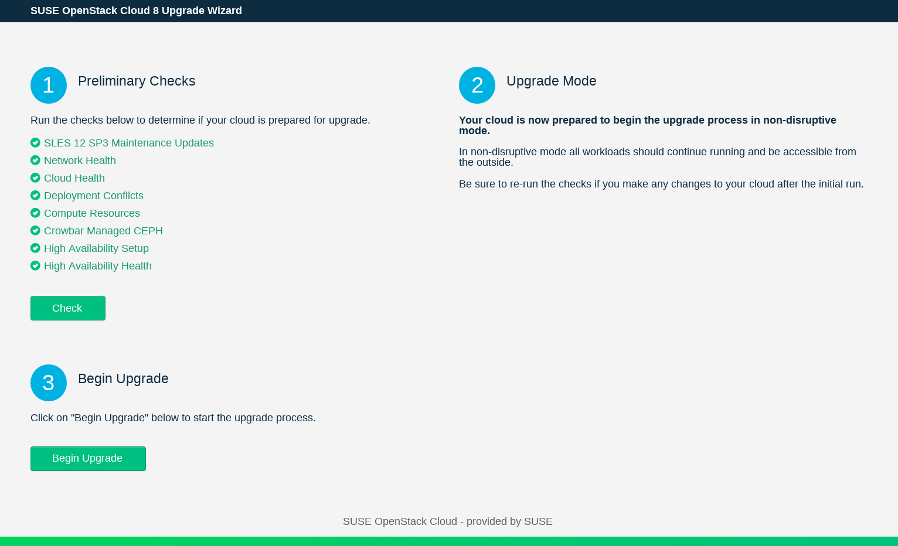
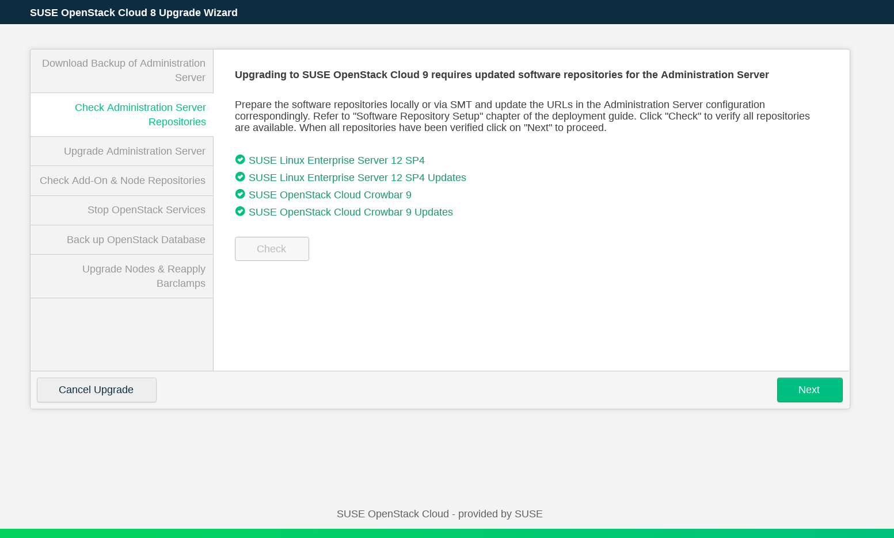
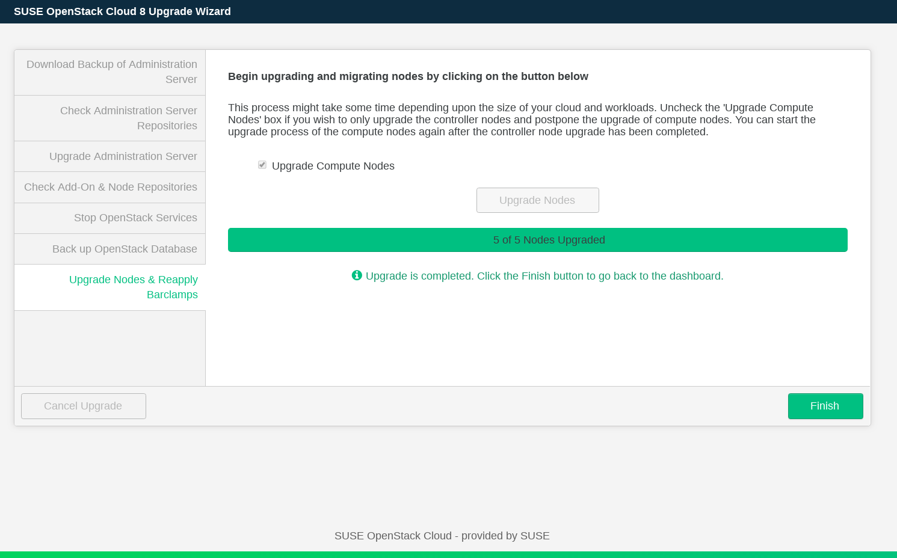
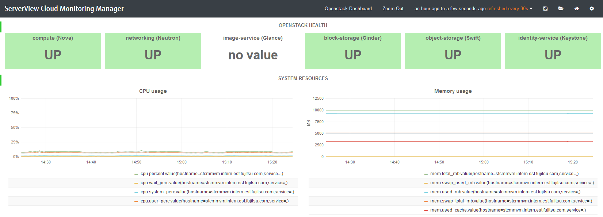
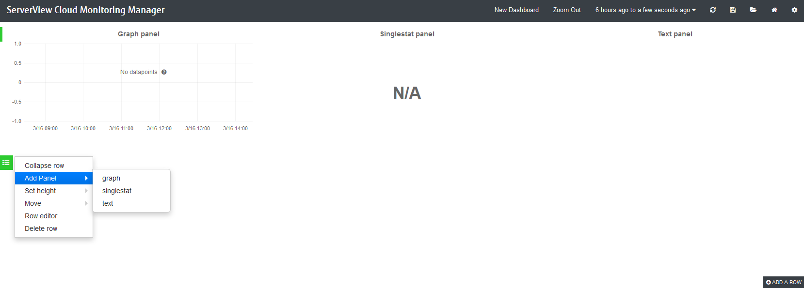
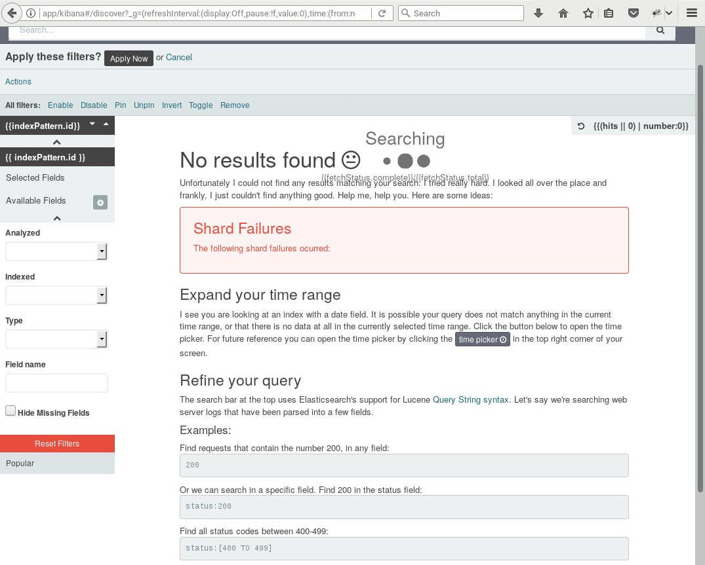

Copyright FUJITSU LIMITED 2015 - 2017
Copyright © 2021 SUSE LLC and contributors. All rights reserved.
Licensed under the Apache License, Version 2.0 (the "License"); you may not use this file except in compliance with the License. You may obtain a copy of the License at http://www.apache.org/licenses/LICENSE-2.0. Unless required by applicable law or agreed to in writing, software distributed under the License is distributed on an "AS IS" BASIS, WITHOUT WARRANTIES OR CONDITIONS OF ANY KIND, either express or implied. See the License for the specific language governing permissions and limitations under the License.
For SUSE trademarks, see http://www.suse.com/company/legal/. All other third-party trademarks are the property of their respective owners. Trademark symbols (®, ™ etc.) denote trademarks of SUSE and its affiliates. Asterisks (*) denote third-party trademarks.
The OpenStack® Word Mark and OpenStack logo are registered trademarks/service marks or trademarks/service marks of the OpenStack Foundation in the United States and other countries and are used with the OpenStack Foundation's permission.
All information found in this book has been compiled with utmost attention to detail. However, this does not guarantee complete accuracy. Neither SUSE LLC, its affiliates, the authors nor the translators shall be held liable for possible errors or the consequences thereof.
Table of Contents
- 1. Maintenance
- Keeping the Nodes Up-To-Date
- Service Order on SUSE OpenStack Cloud Start-up or Shutdown
- Upgrading from SUSE OpenStack Cloud Crowbar 8 to SUSE OpenStack Cloud Crowbar 9
- Recovering from Compute Node Failure
- Bootstrapping the Compute Plane
- Bootstrapping the MariaDB Galera Cluster with Pacemaker when a node is missing
- Updating MariaDB with Galera
- Load Balancer: Octavia Administration
- Periodic OpenStack Maintenance Tasks
- Rotating Fernet Tokens
- 2. GPU passthrough
- 3. Generate SUSE OpenStack Cloud Self Signed Certificate
- 4. SUSE OpenStack Cloud Monitoring
- 5. Log Management
- 6. Troubleshooting
- A. Glossary
List of Figures
Table of Contents
- Keeping the Nodes Up-To-Date
- Service Order on SUSE OpenStack Cloud Start-up or Shutdown
- Upgrading from SUSE OpenStack Cloud Crowbar 8 to SUSE OpenStack Cloud Crowbar 9
- Recovering from Compute Node Failure
- Bootstrapping the Compute Plane
- Bootstrapping the MariaDB Galera Cluster with Pacemaker when a node is missing
- Updating MariaDB with Galera
- Load Balancer: Octavia Administration
- Periodic OpenStack Maintenance Tasks
- Rotating Fernet Tokens
Keeping the nodes in SUSE OpenStack Cloud Crowbar up-to-date requires an appropriate setup of the update and pool repositories and the deployment of either the barclamp or the SUSE Manager barclamp. For details, see the section called “Update and Pool Repositories”, the section called “Deploying Node Updates with the Updater Barclamp”, and the section called “Configuring Node Updates with the Barclamp”.
If one of those barclamps is deployed, patches are installed on the nodes. Patches that do not require a reboot will not cause a service interruption. If a patch (for example, a kernel update) requires a reboot after the installation, services running on the machine that is rebooted will not be available within SUSE OpenStack Cloud. Therefore, we strongly recommend installing those patches during a maintenance window.
Maintenance Mode
As of SUSE OpenStack Cloud Crowbar 8, it is not possible to put your entire SUSE OpenStack Cloud into “Maintenance Mode” (such as limiting all users to read-only operations on the control plane), as OpenStack does not support this. However when Pacemaker is deployed to manage HA clusters, it should be used to place services and cluster nodes into “Maintenance Mode” before performing maintenance functions on them. For more information, see SUSE Linux Enterprise High Availability documentation.
Consequences when Rebooting Nodes
- Administration Server
While the Administration Server is offline, it is not possible to deploy new nodes. However, rebooting the Administration Server has no effect on starting instances or on instances already running.
- Control Nodes
The consequences a reboot of a Control Node depend on the services running on that node:
Database, keystone, RabbitMQ, glance, nova: No new instances can be started.
swift: No object storage data is available. If glance uses swift, it will not be possible to start new instances.
cinder, Ceph: No block storage data is available.
neutron: No new instances can be started. On running instances the network will be unavailable.
horizon. horizon will be unavailable. Starting and managing instances can be done with the command line tools.
- Compute Nodes
Whenever a Compute Node is rebooted, all instances running on that particular node will be shut down and must be manually restarted. Therefore it is recommended to “evacuate” the node by migrating instances to another node, before rebooting it.
In case you need to restart your complete SUSE OpenStack Cloud (after a complete shut down or a power outage), ensure that the external Ceph cluster is started, available and healthy. Then start nodes and services in the order documented below.
Service Order on Start-up
Control Node/Cluster on which the Database is deployed
Control Node/Cluster on which RabbitMQ is deployed
Control Node/Cluster on which keystone is deployed
For swift:
Storage Node on which the
swift-storagerole is deployedStorage Node on which the
swift-proxyrole is deployed
Any remaining Control Node/Cluster. The following additional rules apply:
The Control Node/Cluster on which the
neutron-serverrole is deployed needs to be started before starting the node/cluster on which theneutron-l3role is deployed.The Control Node/Cluster on which the
nova-controllerrole is deployed needs to be started before starting the node/cluster on which heat is deployed.
Compute Nodes
If multiple roles are deployed on a single Control Node, the services are automatically started in the correct order on that node. If you have more than one node with multiple roles, make sure they are started as closely as possible to the order listed above.
To shut down SUSE OpenStack Cloud, terminate nodes and services in the order documented below (which is the reverse of the start-up order).
Service Order on Shutdown
Compute Nodes
Control Node/Cluster on which heat is deployed
Control Node/Cluster on which the
nova-controllerrole is deployedControl Node/Cluster on which the
neutron-l3role is deployedAll Control Node(s)/Cluster(s) on which neither of the following services is deployed: Database, RabbitMQ, and keystone.
For swift:
Storage Node on which the
swift-proxyrole is deployedStorage Node on which the
swift-storagerole is deployed
Control Node/Cluster on which keystone is deployed
Control Node/Cluster on which RabbitMQ is deployed
Control Node/Cluster on which the Database is deployed
If required, gracefully shut down an external Ceph cluster
Upgrading from SUSE OpenStack Cloud Crowbar 8 to SUSE OpenStack Cloud Crowbar 9 can be done either via a Web interface or from the command line. SUSE OpenStack Cloud Crowbar supports a non-disruptive upgrade which provides a fully-functional SUSE OpenStack Cloud operation during most of the upgrade procedure, if your installation meets the requirements at Non-Disruptive Upgrade Requirements.
If the requirements for a non-disruptive upgrade are not met, the upgrade procedure will be done in normal mode. When live-migration is set up, instances will be migrated to another node before the respective Compute Node is updated to ensure continuous operation.
STONITH and Administration Server
Make sure that the STONITH mechanism in your cloud does not rely on the state of the Administration Server (for example, no SBD devices are located there, and IPMI is not using the network connection relying on the Administration Server). Otherwise, this may affect the clusters when the Administration Server is rebooted during the upgrade procedure.
When starting the upgrade process, several checks are performed to determine whether the SUSE OpenStack Cloud is in an upgradeable state and whether a non-disruptive update would be supported:
General Upgrade Requirements
All nodes need to have the latest SUSE OpenStack Cloud Crowbar 8 updates and the latest SLES 12 SP3 updates installed. If this is not the case, refer to the section called “Deploying Node Updates with the Updater Barclamp” for instructions on how to update.
All allocated nodes need to be turned on and have to be in state “ready”.
All barclamp proposals need to have been successfully deployed. If a proposal is in state “failed”, the upgrade procedure will refuse to start. Fix the issue, or remove the proposal, if necessary.
If the Pacemaker barclamp is deployed, all clusters need to be in a healthy state.
The upgrade will not start when Ceph is deployed via Crowbar. Only external Ceph is supported. Documentation for SUSE Enterprise Storage is available at https://documentation.suse.com/ses/5.5/.
The following repositories need to be available on a server that is accessible from the Administration Server. The HA repositories are only needed if you have an HA setup. It is recommended to use the same server that also hosts the respective repositories of the current version.
SUSE-OpenStack-Cloud-Crowbar-9-PoolSUSE-OpenStack-Cloud-Crowbar-9-UpdateSLES12-SP4-PoolSLES12-SP4-UpdateSLE-HA12-SP4-Pool(for HA setups only)SLE-HA12-SP4-Update(for HA setups only)Important
Do not add repositories to the SUSE OpenStack Cloud repository configuration. This needs to be done during the upgrade procedure.
Non-Disruptive Upgrade Requirements
All Control Nodes need to be set up highly available.
A non-disruptive upgrade is not supported if the cinder has been deployed with the
raw devicesorlocal fileback-end. In this case, you have to perform a regular upgrade, or change the cinder back-end for a non-disruptive upgrade.A non-disruptive upgrade is prevented if the
cinder-volumeservice is placed on Compute Node. For a non-disruptive upgrade,cinder-volumeshould either be HA-enabled or placed on non-compute nodes.A non-disruptive upgrade is prevented if
manila-shareservice is placed on a Compute Node. For more information, see the section called “Deploying manila”.Live-migration support needs to be configured and enabled for the Compute Nodes. The amount of free resources (CPU and RAM) on the Compute Nodes needs to be sufficient to evacuate the nodes one by one.
In case of a non-disruptive upgrade, glance must be configured as a shared storage if the value in the glance is set to
File.For a non-disruptive upgrade, only KVM-based Compute Nodes with the
nova-compute-kvmrole are allowed in SUSE OpenStack Cloud Crowbar 8.Non-disruptive upgrade is limited to the following cluster configurations:
Single cluster that has all supported controller roles on it
Two clusters where one only has
neutron-networkand the other one has the rest of the controller roles.Two clusters where one only has
neutron-serverplusneutron-networkand the other one has the rest of the controller roles.Two clusters, where one cluster runs the database and RabbitMQ
Three clusters, where one cluster runs database and RabbitMQ, another cluster has the controller roles, and the third cluster has the
neutron-networkrole.
If your cluster configuration is not supported by the non-disruptive upgrade procedure, you can still perform a normal upgrade.
In SUSE OpenStack Cloud 9, certain configurations and barclamp combinations are no longer supported. See the SUSE OpenStack Cloud 9 release notes for details. The upgrade prechecks fail if they detect an unsupported configuration. Below is a list configurations that cause failure and possible solutions.
Unsupported Configurations
- aodh deployed
The aodh barclamp has been removed in SUSE OpenStack Cloud 9. Deactivate and delete the aodh proposal before continuing the upgrade.
- ceilometer deployed without monasca
As of SUSE OpenStack Cloud 9, ceilometer has been reduced to the ceilometer agent, with monasca being used as a storage back-end. Consequently, a standalone ceilometer without monasca present will fail the upgrade prechecks. There are two possible solutions.
Deactivate and delete the ceilometer proposal before the upgrade, and re-enable it after the upgrade.
Deploy the monasca barclamp before the upgrade.
Existing ceilometer Data
Existing ceilometer data is not migrated to new monasca storage. It stays in the MariaDB ceilometer database, and it can be accessed directly, if needed. The data is also included in the OpenStack database backup created by upgrade process.
- nova: Xen Compute Nodes present
As of SUSE OpenStack Cloud 9, the Xen hypervisor is no longer supported. On any cloud, where Xen based compute nodes are still present, the following procedure must be followed before it can be upgraded to SUSE OpenStack Cloud 9:
Run nova service-disable for all nova Compute Nodes running the Xen hypervisor. In the Crowbar context, these are the Compute Nodes with the
nova-compute-xenrole in the nova barclamp. This prevents any new VMs from being launched on these Compute Nodes. It is safe to leave the Compute Nodes in question in this state for the entire duration of the next step.Recreate all nova instances still running on the Xen-based Compute Nodes on non-Xen Compute Nodes or shut them down completely.
With no other instances on the Xen-based Compute Nodes, remove the nova barclamp's
nova-compute-xenrole from these nodes and re-apply the nova barclamp. You may optionally assign a differentnova-computerole, such asnova-compute-kvm, to configure them as Compute Nodes for one of the remaining hypervisors.
- trove deployed
The trove barclamp has been removed in SUSE OpenStack Cloud 9. Deactivate and delete the trove proposal before continuing the upgrade.
The Web interface features a wizard that guides you through the upgrade procedure.
Canceling the Upgrade
You can cancel the upgrade process by clicking . The upgrade operation can only be canceled before the Administration Server upgrade is started. When the upgrade has been canceled, the nodes return to the ready state. However, any user modifications must be undone manually. This includes reverting repository configuration.
To start the upgrade procedure, open the Crowbar Web interface on the Administration Server and choose +. Alternatively, point the browser directly to the upgrade wizard on the Administration Server, for example
http://192.168.124.10/upgrade/.On the first screen of the Web interface you will run preliminary checks, get information about the upgrade mode and start the upgrade process.
Perform the preliminary checks to determine whether the upgrade requirements are met by clicking in
Preliminary Checks.The Web interface displays the progress of the checks. You will see green, yellow or red indicator next to each check. Yellow means the upgrade can only be performed in the normal mode. Red indicates an error, which means that you need to fix the problem and run the again.
When all checks in the previous step have passed,
Upgrade Modeshows the result of the upgrade analysis. It will indicate whether the upgrade procedure will continue in non-disruptive or in normal mode.To start the upgrade process, click .
While the upgrade of the Administration Server is prepared, the upgrade wizard prompts you to . When the backup is done, move it to a safe place. If something goes wrong during the upgrade procedure of the Administration Server, you can restore the original state from this backup using the crowbarctl backup restore
NAMEcommand.Check that the repositories required for upgrading the Administration Server are available and updated. To do this, click the button. If the checks fail, add the software repositories as described in Chapter 5, Software Repository Setup. Run the checks again, and click .
Click to upgrade and reboot the admin node. Note that this operation may take a while. When the Administration Server has been updated, click .

Check that the repositories required for upgrading all nodes are available and updated. To do this click the button. If the check fails, add the software repositories as described in Chapter 5, Software Repository Setup. Run the checks again, and click .

Next, you need to stop OpenStack services. This makes the OpenStack API unavailable until the upgrade of control plane is completed. When you are ready, click . Wait until the services are stopped and click .
Before upgrading the nodes, the wizard prompts you to . The MariaDB database backup will be stored on the Administration Server. It can be used to restore the database in case something goes wrong during the upgrade. To back up the database, click . When the backup operation is finished, click .
If you prefer to upgrade the controller nodes and postpone upgrading Compute Nodes, disable the option. In this case, you can use the button to switch to the Crowbar Web interface to check the current configuration and make changes, as long as they do not affect the Compute Nodes. If you choose to postpone upgrading Compute Nodes, all OpenStack services remain up and running.

When the upgrade is completed, press to return to the Dashboard.

Dealing with Errors
If an error occurs during the upgrade process, the wizard displays a message with a description of the error and a possible solution. After fixing the error, re-run the step where the error occurred.
The upgrade procedure on the command line is performed by using the program
crowbarctl. For general help, run crowbarctl
help. To get help on a certain subcommand, run
crowbarctl COMMAND help.
To review the process of the upgrade procedure, you may call
crowbarctl upgrade status at any time. Steps may have
three states: pending, running, and
passed.
To start the upgrade procedure from the command line, log in to the Administration Server as
root.Perform the preliminary checks to determine whether the upgrade requirements are met:
root #crowbarctl upgrade prechecksThe command's result is shown in a table. Make sure the column does not contain any entries. If there are errors, fix them and restart the precheck command afterwards. You cannot proceed until the mandatory checks have passed.
root #crowbarctl upgrade prechecks +-------------------------------+--------+----------+--------+------+ | Check ID | Passed | Required | Errors | Help | +-------------------------------+--------+----------+--------+------+ | network_checks | true | true | | | | cloud_healthy | true | true | | | | maintenance_updates_installed | true | true | | | | compute_status | true | false | | | | ha_configured | true | false | | | | clusters_healthy | true | true | | | +-------------------------------+--------+----------+--------+------+Depending on the outcome of the checks, it is automatically decided whether the upgrade procedure will continue in non-disruptive or in normal mode. For the non-disruptive mode, all the checks must pass, including those that are not marked in the table as required.
Forcing Normal Mode Upgrade
The non-disruptive update will take longer than an upgrade in normal mode, because it performs certain tasks sequentially which are done in parallel during the normal upgrade. Live-migrating guests to other Compute Nodes during the non-disruptive upgrade takes additional time.
Therefore, if a non-disruptive upgrade is not a requirement for you, you may want to switch to the normal upgrade mode, even if your setup supports the non-disruptive method. To force the normal upgrade mode, run:
root #crowbarctl upgrade mode normalTo query the current upgrade mode run:
root #crowbarctl upgrade modeTo switch back to the non-disruptive mode run:
root #crowbarctl upgrade mode non_disruptiveIt is possible to call this command at any time during the upgrade process until the
servicesstep is started. After that point the upgrade mode can no longer be changed.Prepare the nodes by transitioning them into the “upgrade” state and stopping the chef daemon:
root #crowbarctl upgrade prepareDepending of the size of your SUSE OpenStack Cloud deployment, this step may take some time. Use the command crowbarctl upgrade status to monitor the status of the process named
steps.prepare.status. It needs to be in statepassedbefore you proceed:root #crowbarctl upgrade status +--------------------------------+----------------+ | Status | Value | +--------------------------------+----------------+ | current_step | backup_crowbar | | current_substep | | | current_substep_status | | | current_nodes | | | current_node_action | | | remaining_nodes | | | upgraded_nodes | | | crowbar_backup | | | openstack_backup | | | suggested_upgrade_mode | non_disruptive | | selected_upgrade_mode | | | compute_nodes_postponed | false | | steps.prechecks.status | passed | | steps.prepare.status | passed | | steps.backup_crowbar.status | pending | | steps.repocheck_crowbar.status | pending | | steps.admin.status | pending | | steps.repocheck_nodes.status | pending | | steps.services.status | pending | | steps.backup_openstack.status | pending | | steps.nodes.status | pending | +--------------------------------+----------------+Create a backup of the existing Administration Server installation. In case something goes wrong during the upgrade procedure of the Administration Server you can restore the original state from this backup with the command crowbarctl backup restore
NAMEroot #crowbarctl upgrade backup crowbarTo list all existing backups including the one you have just created, run the following command:
root #crowbarctl backup list +----------------------------+--------------------------+--------+---------+ | Name | Created | Size | Version | +----------------------------+--------------------------+--------+---------+ | crowbar_upgrade_1534864741 | 2018-08-21T15:19:03.138Z | 219 KB | 4.0 | +----------------------------+--------------------------+--------+---------+This step prepares the upgrade of the Administration Server by checking the availability of the update and pool repositories for SUSE OpenStack Cloud Crowbar 9 and SUSE Linux Enterprise Server 12 SP4. Run the following command:
root #crowbarctl upgrade repocheck crowbar +----------------------------------------+------------------+-----------+ | Repository | Status | Type | +----------------------------------------+------------------+-----------+ | SLES12-SP4-Pool | x86_64 (missing) | os | | SLES12-SP4-Updates | x86_64 (missing) | os | | SUSE-OpenStack-Cloud-Crowbar-9-Pool | available | openstack | | SUSE-OpenStack-Cloud-Crowbar-9-Updates | available | openstack | +----------------------------------------+------------------+-----------+Two of the required repositories are reported as missing, because they have not yet been added to the Crowbar configuration. To add them to the Administration Server proceed as follows.
Note that this step is for setting up the repositories for the Administration Server, not for the nodes in SUSE OpenStack Cloud (this will be done in a subsequent step).
Start yast repositories and proceed with . Replace the repositories
SLES12-SP3-PoolandSLES12-SP3-Updateswith the respective SP4 repositories.If you prefer to use zypper over YaST, you may alternatively make the change using zypper mr.
Next, replace the
SUSE-OpenStack-Cloud-Crowbar-8update and pool repositories with the respective SUSE OpenStack Cloud Crowbar 9 versions.Check for other (custom) repositories. All SLES SP3 repositories need to be replaced with the respective SLES SP4 version. In case no SP3 version exists, disable the repository—the respective packages from that repository will be deleted during the upgrade.
Administration Server with external SMT
If the Administration Server is configured with external SMT, the system repositories configuration is managed by the system utilities. In this case, skip the above substeps and run the zypper migration --download-only command.
Once the repository configuration on the Administration Server has been updated, run the command to check the repositories again. If the configuration is correct, the result should look like the following:
root #crowbarctl upgrade repocheck crowbar +----------------------------------------+-----------+-----------+ | Repository | Status | Type | +----------------------------------------+-----------+-----------+ | SLES12-SP4-Pool | available | os | | SLES12-SP4-Updates | available | os | | SUSE-OpenStack-Cloud-Crowbar-9-Pool | available | openstack | | SUSE-OpenStack-Cloud-Crowbar-9-Updates | available | openstack | +----------------------------------------+-----------+-----------+Now that the repositories are available, the Administration Server itself will be upgraded. The update will run in the background using zypper dup. Once all packages have been upgraded, the Administration Server will be rebooted and you will be logged out. To start the upgrade run:
root #crowbarctl upgrade adminAfter the Administration Server has been successfully updated, the Control Nodes and Compute Nodes will be upgraded. At first the availability of the repositories used to provide packages for the SUSE OpenStack Cloud nodes is tested.
Correct Metadata in the PTF Repository
When adding new repositories to the nodes, make sure that the new PTF repository also contains correct metadata (even if it is empty). To do this, run the createrepo-cloud-ptf command.
Note that the configuration for these repositories differs from the one for the Administration Server that was already done in a previous step. In this step the repository locations are made available to Crowbar rather than to libzypp on the Administration Server. To check the repository configuration run the following command:
root #crowbarctl upgrade repocheck nodes +----------------------------------------+-------------------------------------+-----------+ | Repository | Status | Type | +----------------------------------------+-------------------------------------+-----------+ | SLE12-SP4-HA-Pool | missing (x86_64), inactive (x86_64) | ha | | SLE12-SP4-HA-Updates | missing (x86_64), inactive (x86_64) | ha | | SLE12-SP4-HA-Updates-test | missing (x86_64), inactive (x86_64) | ha | | SLES12-SP4-Pool | missing (x86_64), inactive (x86_64) | os | | SLES12-SP4-Updates | missing (x86_64), inactive (x86_64) | os | | SLES12-SP4-Updates-test | missing (x86_64), inactive (x86_64) | os | | SUSE-OpenStack-Cloud-Crowbar-9-Pool | missing (x86_64), inactive (x86_64) | openstack | | SUSE-OpenStack-Cloud-Crowbar-9-Updates | missing (x86_64), inactive (x86_64) | openstack | +----------------------------------------+-------------------------------------+-----------+To update the locations for the listed repositories, start yast crowbar and proceed as described in the section called “”.
Once the repository configuration for Crowbar has been updated, run the command to check the repositories again to determine, whether the current configuration is correct.
root #crowbarctl upgrade repocheck nodes +----------------------------------------+-----------+-----------+ | Repository | Status | Type | +----------------------------------------+-----------+-----------+ | SLE12-SP4-HA-Pool | available | ha | | SLE12-SP4-HA-Updates | available | ha | | SLES12-SP4-Pool | available | os | | SLES12-SP4-Updates | available | os | | SUSE-OpenStack-Cloud-Crowbar-9-Pool | available | openstack | | SUSE-OpenStack-Cloud-Crowbar-9-Updates | available | openstack | +----------------------------------------+-----------+-----------+Shut Down Running instances in Normal Mode
If the upgrade is done in the normal mode, you need to shut down or suspend all running instances before performing the next step.
Product Media Repository Copies
To PXE boot new nodes, an additional SUSE Linux Enterprise Server 12 SP4 repository—a copy of the installation system— is required. Although not required during the upgrade procedure, it is recommended to set up this directory now. Refer to the section called “Copying the Product Media Repositories” for details. If you had also copied the SUSE OpenStack Cloud Crowbar 8 installation media (optional), you may also want to provide the SUSE OpenStack Cloud Crowbar 9 the same way.
Once the upgrade procedure has been successfully finished, you may delete the previous copies of the installation media in
/srv/tftpboot/suse-12.4/x86_64/installand/srv/tftpboot/suse-12.4/x86_64/repos/Cloud.To ensure the status of the nodes does not change during the upgrade process, the majority of the OpenStack services will be stopped on the nodes. As a result, the OpenStack API will no longer be accessible. In case of the non-disruptive mode, the instances will continue to run and stay accessible. Run the following command:
root #crowbarctl upgrade servicesThis step takes a while to finish. Monitor the process by running crowbarctl upgrade status. Do not proceed before
steps.services.statusis set topassed.The last step before upgrading the nodes is to make a backup of the OpenStack database. The database dump will be stored on the Administration Server and can be used to restore the database in case something goes wrong during the upgrade.
root #crowbarctl upgrade backup openstackTo find the location of the database dump, run the crowbarctl upgrade status.
The final step of the upgrade procedure is upgrading the nodes. To start the process, enter:
root #crowbarctl upgrade nodes allThe upgrade process runs in the background and can be queried with crowbarctl upgrade status. Depending on the size of your SUSE OpenStack Cloud it may take several hours, especially when performing a non-disruptive update. In that case, the Compute Nodes are updated one-by-one after instances have been live-migrated to other nodes.
Instead of upgrading all nodes you may also upgrade the Control Nodes first and individual Compute Nodes afterwards. Refer to crowbarctl upgrade nodes --help for details. If you choose this approach, you can use the crowbarctl upgrade status command to monitor the upgrade process. The output of this command contains the following entries:
- current_node_action
The current action applied to the node.
- current_substep
Shows the current substep of the node upgrade step. For example, for the crowbarctl upgrade nodes controllers, the
current_substepentry displays thecontroller_nodesstatus when upgrading controllers.
After the controllers have been upgraded, the
steps.nodes.statusentry in the output displays therunningstatus. Check then the status of thecurrent_substep_statusentry. If it displaysfinished, you can move to the next step of upgrading the Compute Nodes.Postponing the Upgrade
It is possible to stop the upgrade of compute nodes and postpone their upgrade with the command:
root #crowbarctl upgrade nodes postponeAfter the upgrade of compute nodes is postponed, you can go to Crowbar Web interface, check the configuration. You can also apply some changes, provided they do not affect the Compute Nodes. During the postponed upgrade, all OpenStack services should be up and running.
To resume the upgrade, issue the command:
root #crowbarctl upgrade nodes resumeFinish the upgrade with either crowbarctl upgrade nodes all or upgrade nodes one node by one with crowbarctl upgrade nodes
NODE_NAME.When upgrading individual Compute Nodes using the crowbarctl upgrade nodes
NODE_NAMEcommand, thecurrent_substep_statusentry changes tonode_finishedwhen the upgrade of a single node is done. After all nodes have been upgraded, thecurrent_substep_statusentry displaysfinished.
Dealing with Errors
If an error occurs during the upgrade process, the output of the crowbarctl upgrade status provides a detailed description of the failure. In most cases, both the output and the error message offer enough information for fixing the issue. When the problem has been solved, run the previously-issued upgrade command to resume the upgrade process.
It is possible to select more Compute Nodes for selective upgrade instead of just one. Upgrading multiple nodes simultaneously significantly reduces the time required for the upgrade.
To upgrade multiple nodes simultaneously, use the following command:
root #crowbarctl upgrade nodesNODE_NAME_1,NODE_NAME_2,NODE_NAME_3
Node names can be separated by comma, semicolon, or space. When using space as separator, put the part containing node names in quotes.
Use the following command to find the names of the nodes that haven't been upgraded:
root # crowbarctl upgrade status nodesSince the simultaneous upgrade is intended to be non-disruptive, all Compute Nodes targeted for a simultaneous upgrade must be cleared of any running instances.
Note
You can check what instances are running on a specific node using the following command:
tux >nova list --all-tenants --hostNODE_NAME
This means that it is not possible to pick an arbitrary number of Compute Nodes for the simultaneous upgrade operation: you have to make sure that it is possible to live-migrate every instance away from the batch of nodes that are supposed to be upgraded in parallel. In case of high load on all Compute Nodes, it might not be possible to upgrade more than one node at a time. Therefore, it is recommended to perform the following steps for each node targeted for the simultaneous upgrade prior to running the crowbarctl upgrade nodes command.
Disable the Compute Node so it's not used as a target during live-evacuation of any other node:
tux >openstack compute service set --disable"NODE_NAME"nova-computeEvacuate all running instances from the node:
tux >nova host-evacuate-live"NODE_NAME"
After completing these steps, you can perform a simultaneous upgrade of the selected nodes.
- 1. Upgrade of the admin server has failed.
- 2. An upgrade step repeatedly fails due to timeout.
- 3. Node upgrade has failed during live migration.
- 4. Node has failed during OS upgrade.
- 5. Node does not come up after reboot.
- 6. N number of nodes were provided to compute upgrade using crowbarctl upgrade nodes node_1,node_2,...,node_N, but less then N were actually upgraded.
- 7. Node has failed at the initial chef client run stage.
- 8. I need to change OpenStack configuration during the upgrade but I cannot access Crowbar.
- 9. Failure occurred when evacuating routers.
- 10. Some non-controller nodes were upgraded after performing crowbarctl upgrade nodes controllers.
1. | Upgrade of the admin server has failed. |
Check for empty, broken, and not signed repositories in the Administration Server
upgrade log file | |
2. | An upgrade step repeatedly fails due to timeout. |
Timeouts for most upgrade operations can be adjusted in the
:prepare_repositories: 120
:pre_upgrade: 300
:upgrade_os: 1500
:post_upgrade: 600
:shutdown_services: 600
:shutdown_remaining_services: 600
:evacuate_host: 300
:chef_upgraded: 1200
:router_migration: 600
:lbaas_evacuation: 600
:set_network_agents_state: 300
:delete_pacemaker_resources: 600
:delete_cinder_services: 300
:delete_nova_services: 300
:wait_until_compute_started: 60
:reload_nova_services: 120
:online_migrations: 1800
The following entries may require higher values (all values are specified in seconds):
| |
3. | Node upgrade has failed during live migration. |
The problem may occur when it is not possible to live migrate certain
VMs anywhere. It may be necessary to shut down or suspend other VMs to
make room for migration. Note that the Bash shell script that starts
the live migration for the Compute Node is executed from the
Control Node. An error message generated by the crowbarctl
upgrade status command contains the exact names of both
nodes. Check the
It is possible that live-migration of a certain VM takes too long. This
can happen if instances are very large or network connection between
compute hosts is slow or overloaded. If this case, try to raise the
global timeout in
We recommend to perform the live migration manually first. After it is completed successfully, call the crowbarctl upgrade command again. The following commands can be helpful for analyzing issues with live migrations:
nova server-migration-list
nova server-migration-show
nova instance-action-list
nova instance-action
Note that these commands require OpenStack administrator privileges. The following log files may contain useful information:
It can happen that active instances and instances with heavy
loads cannot be live migrated in a reasonable time. In that case, you
can abort a running live-migration operation using the nova
live-migration-abort
Alternatively, it is possible to force the completion of
the live migration by using the nova
live-migration-force-complete
| |
4. | Node has failed during OS upgrade. |
Possible reasons include an incorrect repository setup or package
conflicts. Check the | |
5. | Node does not come up after reboot. |
In some cases, a node can take too long to reboot causing a timeout. We recommend to check the node manually, make sure it is online, and repeat the step. | |
6. | N number of nodes were provided to compute upgrade using crowbarctl upgrade nodes node_1,node_2,...,node_N, but less then N were actually upgraded. |
If the live migration cannot be performed for certain nodes due to a timeout, Crowbar upgrades only the nodes that it was able to live-evacuate in the specified time. Because some nodes have been upgraded, it is possible that more resources will be available for live-migration when you try to run this step again. See also Q: 3. | |
7. | Node has failed at the initial chef client run stage. |
An unsupported entry in the configuration file may prevent a service
from starting. This causes the node to fail at the initial
chef client run stage. Checking the
| |
8. | I need to change OpenStack configuration during the upgrade but I cannot access Crowbar. |
Crowbar Web interface is accessible only when an upgrade is completed or when it is postponed. Postponing the upgrade can be done only after upgrading all Control Nodes using the crowbarctl upgrade nodes postpone command. You can then access Crowbar and save your modifications. Before you can continue with the upgrade of rest of the nodes, resume the upgrade using the crowbarctl upgrade nodes resume command. | |
9. | Failure occurred when evacuating routers. |
Check the
openstack router show Resume the upgrade by running the failed upgrade step again to continue with the router migration. | |
10. | Some non-controller nodes were upgraded after performing crowbarctl upgrade nodes controllers. |
In the current upgrade implementation, OpenStack nodes are divided into Compute Nodes and other nodes. The crowbarctl upgrade nodes controllers command starts the upgrade of all the nodes that do not host compute services. This includes the controllers. |
The following procedure assumes that there is at least one Compute Node already running. Otherwise, see the section called “Bootstrapping the Compute Plane”.
Procedure 1.1. Procedure for Recovering from Compute Node Failure
If the Compute Node failed, it should have been fenced. Verify that this is the case. Otherwise, check
/var/log/pacemaker.logon the Designated Coordinator to determine why the Compute Node was not fenced. The most likely reason is a problem with STONITH devices.Determine the cause of the Compute Node's failure.
Rectify the root cause.
Boot the Compute Node again.
Check whether the
crowbar_joinscript ran successfully on the Compute Node. If this is not the case, check the log files to find out the reason. Refer to the section called “On All Other Crowbar Nodes” to find the exact location of the log file.If the
chef-clientagent triggered bycrowbar_joinsucceeded, confirm that thepacemaker_remoteservice is up and running.Check whether the remote node is registered and considered healthy by the core cluster. If this is not the case check
/var/log/pacemaker.logon the Designated Coordinator to determine the cause. There should be a remote primitive running on the core cluster (active/passive). This primitive is responsible for establishing a TCP connection to thepacemaker_remoteservice on port 3121 of the Compute Node. Ensure that nothing is preventing this particular TCP connection from being established (for example, problems with NICs, switches, firewalls etc.). One way to do this is to run the following commands:tux >lsof -i tcp:3121tux >tcpdump tcp port 3121If Pacemaker can communicate with the remote node, it should start the
nova-computeservice on it as part of the cloned groupcl-g-nova-computeusing the NovaCompute OCF resource agent. This cloned group will block startup ofnova-evacuateuntil at least one clone is started.A necessary, related but different procedure is described in the section called “Bootstrapping the Compute Plane”.
It may happen that
novaComputehas been launched correctly on the Compute Node bylrmd, but theopenstack-nova-computeservice is still not running. This usually happens whennova-evacuatedid not run correctly.If
nova-evacuateis not running on one of the core cluster nodes, make sure that the service is marked as started (target-role="Started"). If this is the case, then your cloud does not have any Compute Nodes already running as assumed by this procedure.If
nova-evacuateis started but it is failing, check the Pacemaker logs to determine the cause.If
nova-evacuateis started and functioning correctly, it should call nova'sevacuateAPI to release resources used by the Compute Node and resurrect elsewhere any VMs that died when it failed.If
openstack-nova-computeis running, but VMs are not booted on the node, check that the service is not disabled or forced down using the openstack compute service list command. In case the service is disabled, run the openstack compute service set –enableSERVICE_IDcommand. If the service is forced down, run the following commands:tux >fence_nova_param () { key="$1" cibadmin -Q -A "//primitive[@id="fence-nova"]//nvpair[@name='$key']" | \ sed -n '/.*value="/{s///;s/".*//;p}' }tux >fence_compute \ --auth-url=`fence_nova_param auth-url` \ --endpoint-type=`fence_nova_param endpoint-type` \ --tenant-name=`fence_nova_param tenant-name` \ --domain=`fence_nova_param domain` \ --username=`fence_nova_param login` \ --password=`fence_nova_param passwd` \ -nCOMPUTE_HOSTNAME\ --action=on
The above steps should be performed automatically after the node is booted. If that does not happen, try the following debugging techniques.
Check the evacuate attribute for the Compute Node in the
Pacemaker cluster's attrd service using the
command:
tux >attrd_updater -p -n evacuate -NNODE
Possible results are the following:
The attribute is not set. Refer to Step 1 in Procedure 1.1, “Procedure for Recovering from Compute Node Failure”.
The attribute is set to
yes. This means that the Compute Node was fenced, butnova-evacuatenever initiated the recovery procedure by calling nova's evacuate API.The attribute contains a time stamp, in which case the recovery procedure was initiated at the time indicated by the time stamp, but has not completed yet.
If the attribute is set to
no, the recovery procedure recovered successfully and the cloud is ready for the Compute Node to rejoin.
If the attribute is stuck with the wrong value, it can be set to
no using the command:
tux >attrd_updater -n evacuate -U no -NNODE
After standard fencing has been performed, fence agent
fence_compute should activate the secondary
fencing device (fence-nova). It does this by setting
the attribute to yes to mark the node as needing
recovery. The agent also calls nova's
force_down API to notify it that the host is down.
You should be able to see this in
/var/log/nova/fence_compute.log on the node in the core
cluster that was running the fence-nova agent at
the time of fencing. During the recovery, fence_compute
tells nova that the host is up and running again.
If the whole compute plane is down, it is not always obvious how to boot it
up, because it can be subject to deadlock if evacuate attributes are set on
every Compute Node. In this case, manual intervention is
required. Specifically, the operator must manually choose one or more
Compute Nodes to bootstrap the compute plane, and then run the
attrd_updater -n evacuate -U no -N NODE
command for each
of those Compute Nodes to indicate that they do not require the resurrection
process and can have their nova-compute start up straight
away. Once these Compute Nodes are up, this breaks the deadlock allowing
nova-evacuate to start. This way, any other nodes that
require resurrection can be processed automatically. If no resurrection is
desired anywhere in the cloud, then the attributes should be set to
no for all nodes.
Important
If Compute Nodes are started too long after the
remote-* resources are started on the control plane,
they are liable to fencing. This should be avoided.
Pacemaker does not promote a node to master until it received from all nodes the latest Sequence number (seqno). That is a problem when one node of the MariaDB Galera Cluster is down (eg. due to hardware or network problems) because the Sequence number can not be received from the unavailable node. To recover a MariaDB Galera Cluster manual steps are needed to select a bootstrap node for MariaDB Galera Cluster and to promote that node with Pacemaker.
Important
Selecting the correct bootstrap node (depending on the highest Sequence number (seqno)) is important. If the wrong node is selected data loss is possible.
To find out which node has the latest Sequence number, call the following command on all MariaDB Galera Cluster nodes and select the node with the highest Sequence number.
mysqld_safe --wsrep-recover tail -5 /var/log/mysql/mysqld.log ... [Note] WSREP: Recovered position: 7a477edc-757d-11e9-a01a-d218e7381711:2490At the end of
/var/log/mysql/mysqld.logthe Sequence number is written (in this example, the sequence number is 2490). After all Sequence numbers are collected from all nodes, the node with the highest Sequence number is selected for bootstrap node. In this example, the node with the highest Sequence number is callednode1.Temporarily mark the galera Pacemaker resource as unmanaged:
crm resource unmanage galeraMark the node as bootstrap node (call the following commands from the bootstrap node which is
node1in this example):crm_attribute -N node1 -l reboot --name galera-bootstrap -v true crm_attribute -N node1 -l reboot --name master-galera -v 100Promote the bootstrap node:
crm_resource --force-promote -r galera -VRedetect the current state of the galera resource:
crm resource cleanup galeraReturn the control to Pacemaker:
crm resource manage galera crm resource start galera
The MariaDB Galera Cluster is now running and Pacemaker is handling the cluster.
Updating MariaDB with Galera must be done manually. Crowbar does not install updates automatically. Updates can be done with Pacemaker or with the CLI. In particular, manual updating applies to upgrades to MariaDB 10.2.17 or higher from MariaDB 10.2.16 or earlier. See MariaDB 10.2.22 Release Notes - Notable Changes.
Note
In order to run the following update steps, the database cluster needs to be up and healthy.
Using the Pacemaker GUI, update MariaDB with the following procedure:
Put the cluster into maintenance mode. Detailed information about the Pacemaker GUI and its operation is available in the https://documentation.suse.com/sle-ha/15-SP1/single-html/SLE-HA-guide/#cha-conf-hawk2.
Perform a rolling upgrade to MariaDB following the instructions at Upgrading Between Minor Versions with Galera Cluster.
The process involves the following steps:
Stop MariaDB
Uninstall the old versions of MariaDB and the Galera wsrep provider
Install the new versions of MariaDB and the Galera wsrep provider
Change configuration options if necessary
Start MariaDB
Run mysql_upgrade with the
--skip-write-binlogoption
Each node must upgraded individually so that the cluster is always operational.
Using the Pacemaker GUI, take the cluster out of maintenance mode.
When updating with the CLI, the database cluster must be up and healthy. Update MariaDB with the following procedure:
Mark Galera as unmanaged:
crm resource unmanage galera
Or put the whole cluster into maintenance mode:
crm configure property maintenance-mode=true
Pick a node other than the one currently targeted by the load balancer and stop MariaDB on that node:
crm_resource --wait --force-demote -r galera -V
Perform updates with the following steps:
Uninstall the old versions of MariaDB and the Galera wsrep provider.
Install the new versions of MariaDB and the Galera wsrep provider. Select the appropriate instructions at Installing MariaDB with zypper.
Change configuration options if necessary.
Start MariaDB on the node.
crm_resource --wait --force-promote -r galera -V
Run mysql_upgrade with the
--skip-write-binlogoption.On the other nodes, repeat the process detailed above: stop MariaDB, perform updates, start MariaDB, run mysql_upgrade.
Mark Galera as managed:
crm resource manage galera
Or take the cluster out of maintenance mode.
The following procedures demonstrate how to delete a load
balancer that is in the ERROR,
PENDING_CREATE, or
PENDING_DELETE state.
Procedure 1.2. Manually deleting load balancers created with neutron lbaasv2 (in an upgrade/migration scenario)
Query the Neutron service for the loadbalancer ID:
tux >neutron lbaas-loadbalancer-list neutron CLI is deprecated and will be removed in the future. Use openstack CLI instead. +--------------------------------------+---------+----------------------------------+--------------+---------------------+----------+ | id | name | tenant_id | vip_address | provisioning_status | provider | +--------------------------------------+---------+----------------------------------+--------------+---------------------+----------+ | 7be4e4ab-e9c6-4a57-b767-da9af5ba7405 | test-lb | d62a1510b0f54b5693566fb8afeb5e33 | 192.168.1.10 | ERROR | haproxy | +--------------------------------------+---------+----------------------------------+--------------+---------------------+----------+Connect to the neutron database:
Important
The default database name depends on the life cycle manager. Ardana uses
ovs_neutronwhile Crowbar usesneutron.Ardana:
mysql> use ovs_neutronCrowbar:
mysql> use neutronGet the pools and healthmonitors associated with the loadbalancer:
mysql> select id, healthmonitor_id, loadbalancer_id from lbaas_pools where loadbalancer_id = '7be4e4ab-e9c6-4a57-b767-da9af5ba7405'; +--------------------------------------+--------------------------------------+--------------------------------------+ | id | healthmonitor_id | loadbalancer_id | +--------------------------------------+--------------------------------------+--------------------------------------+ | 26c0384b-fc76-4943-83e5-9de40dd1c78c | 323a3c4b-8083-41e1-b1d9-04e1fef1a331 | 7be4e4ab-e9c6-4a57-b767-da9af5ba7405 | +--------------------------------------+--------------------------------------+--------------------------------------+Get the members associated with the pool:
mysql> select id, pool_id from lbaas_members where pool_id = '26c0384b-fc76-4943-83e5-9de40dd1c78c'; +--------------------------------------+--------------------------------------+ | id | pool_id | +--------------------------------------+--------------------------------------+ | 6730f6c1-634c-4371-9df5-1a880662acc9 | 26c0384b-fc76-4943-83e5-9de40dd1c78c | | 06f0cfc9-379a-4e3d-ab31-cdba1580afc2 | 26c0384b-fc76-4943-83e5-9de40dd1c78c | +--------------------------------------+--------------------------------------+Delete the pool members:
mysql> delete from lbaas_members where id = '6730f6c1-634c-4371-9df5-1a880662acc9'; mysql> delete from lbaas_members where id = '06f0cfc9-379a-4e3d-ab31-cdba1580afc2';Find and delete the listener associated with the loadbalancer:
mysql> select id, loadbalancer_id, default_pool_id from lbaas_listeners where loadbalancer_id = '7be4e4ab-e9c6-4a57-b767-da9af5ba7405'; +--------------------------------------+--------------------------------------+--------------------------------------+ | id | loadbalancer_id | default_pool_id | +--------------------------------------+--------------------------------------+--------------------------------------+ | 3283f589-8464-43b3-96e0-399377642e0a | 7be4e4ab-e9c6-4a57-b767-da9af5ba7405 | 26c0384b-fc76-4943-83e5-9de40dd1c78c | +--------------------------------------+--------------------------------------+--------------------------------------+ mysql> delete from lbaas_listeners where id = '3283f589-8464-43b3-96e0-399377642e0a';Delete the pool associated with the loadbalancer:
mysql> delete from lbaas_pools where id = '26c0384b-fc76-4943-83e5-9de40dd1c78c';Delete the healthmonitor associated with the pool:
mysql> delete from lbaas_healthmonitors where id = '323a3c4b-8083-41e1-b1d9-04e1fef1a331';Delete the loadbalancer:
mysql> delete from lbaas_loadbalancer_statistics where loadbalancer_id = '7be4e4ab-e9c6-4a57-b767-da9af5ba7405'; mysql> delete from lbaas_loadbalancers where id = '7be4e4ab-e9c6-4a57-b767-da9af5ba7405';
Procedure 1.3. Manually Deleting Load Balancers Created With Octavia
Query the Octavia service for the loadbalancer ID:
tux >openstack loadbalancer list --column id --column name --column provisioning_status +--------------------------------------+---------+---------------------+ | id | name | provisioning_status | +--------------------------------------+---------+---------------------+ | d8ac085d-e077-4af2-b47a-bdec0c162928 | test-lb | ERROR | +--------------------------------------+---------+---------------------+Query the Octavia service for the amphora IDs (in this example we use
ACTIVE/STANDBYtopology with 1 spare Amphora):tux >openstack loadbalancer amphora list +--------------------------------------+--------------------------------------+-----------+--------+---------------+-------------+ | id | loadbalancer_id | status | role | lb_network_ip | ha_ip | +--------------------------------------+--------------------------------------+-----------+--------+---------------+-------------+ | 6dc66d41-e4b6-4c33-945d-563f8b26e675 | d8ac085d-e077-4af2-b47a-bdec0c162928 | ALLOCATED | BACKUP | 172.30.1.7 | 192.168.1.8 | | 1b195602-3b14-4352-b355-5c4a70e200cf | d8ac085d-e077-4af2-b47a-bdec0c162928 | ALLOCATED | MASTER | 172.30.1.6 | 192.168.1.8 | | b2ee14df-8ac6-4bb0-a8d3-3f378dbc2509 | None | READY | None | 172.30.1.20 | None | +--------------------------------------+--------------------------------------+-----------+--------+---------------+-------------+Query the Octavia service for the loadbalancer pools:
tux >openstack loadbalancer pool list +--------------------------------------+-----------+----------------------------------+---------------------+----------+--------------+----------------+ | id | name | project_id | provisioning_status | protocol | lb_algorithm | admin_state_up | +--------------------------------------+-----------+----------------------------------+---------------------+----------+--------------+----------------+ | 39c4c791-6e66-4dd5-9b80-14ea11152bb5 | test-pool | 86fba765e67f430b83437f2f25225b65 | ACTIVE | TCP | ROUND_ROBIN | True | +--------------------------------------+-----------+----------------------------------+---------------------+----------+--------------+----------------+Connect to the octavia database:
mysql> use octaviaDelete any listeners, pools, health monitors, and members from the load balancer:
mysql> delete from listener where load_balancer_id = 'd8ac085d-e077-4af2-b47a-bdec0c162928'; mysql> delete from health_monitor where pool_id = '39c4c791-6e66-4dd5-9b80-14ea11152bb5'; mysql> delete from member where pool_id = '39c4c791-6e66-4dd5-9b80-14ea11152bb5'; mysql> delete from pool where load_balancer_id = 'd8ac085d-e077-4af2-b47a-bdec0c162928';Delete the amphora entries in the database:
mysql> delete from amphora_health where amphora_id = '6dc66d41-e4b6-4c33-945d-563f8b26e675'; mysql> update amphora set status = 'DELETED' where id = '6dc66d41-e4b6-4c33-945d-563f8b26e675'; mysql> delete from amphora_health where amphora_id = '1b195602-3b14-4352-b355-5c4a70e200cf'; mysql> update amphora set status = 'DELETED' where id = '1b195602-3b14-4352-b355-5c4a70e200cf';Delete the load balancer instance:
mysql> update load_balancer set provisioning_status = 'DELETED' where id = 'd8ac085d-e077-4af2-b47a-bdec0c162928';The following script automates the above steps:
#!/bin/bash if (( $# != 1 )); then echo "Please specify a loadbalancer ID" exit 1 fi LB_ID=$1 set -u -e -x readarray -t AMPHORAE < <(openstack loadbalancer amphora list \ --format value \ --column id \ --column loadbalancer_id \ | grep ${LB_ID} \ | cut -d ' ' -f 1) readarray -t POOLS < <(openstack loadbalancer show ${LB_ID} \ --format value \ --column pools) mysql octavia --execute "delete from listener where load_balancer_id = '${LB_ID}';" for p in "${POOLS[@]}"; do mysql octavia --execute "delete from health_monitor where pool_id = '${p}';" mysql octavia --execute "delete from member where pool_id = '${p}';" done mysql octavia --execute "delete from pool where load_balancer_id = '${LB_ID}';" for a in "${AMPHORAE[@]}"; do mysql octavia --execute "delete from amphora_health where amphora_id = '${a}';" mysql octavia --execute "update amphora set status = 'DELETED' where id = '${a}';" done mysql octavia --execute "update load_balancer set provisioning_status = 'DELETED' where id = '${LB_ID}';"
Heat-manage helps manage Heat specific database operations. The associated
database should be periodically purged to save space. The following should
be setup as a cron job on the servers where the heat service is running at
/etc/cron.weekly/local-cleanup-heat
with the following content:
#!/bin/bash su heat -s /bin/bash -c "/usr/bin/heat-manage purge_deleted -g days 14" || :
nova-manage db archive_deleted_rows command will move deleted rows
from production tables to shadow tables. Including
--until-complete will make the command run continuously
until all deleted rows are archived. It is recommended to setup this task
as /etc/cron.weekly/local-cleanup-nova
on the servers where the nova service is running, with the
following content:
#!/bin/bash su nova -s /bin/bash -c "/usr/bin/nova-manage db archive_deleted_rows --until-complete" || :
Fernet tokens should be rotated frequently for security purposes.
It is recommended to setup this task as a cron job in
/etc/cron.weekly/openstack-keystone-fernet
on the keystone server designated as a master node in a highly
available setup with the following content:
#!/bin/bash su keystone -s /bin/bash -c "keystone-manage fernet_rotate" /usr/bin/keystone-fernet-keys-push.sh 192.168.81.168; /usr/bin/keystone-fernet-keys-push.sh 192.168.81.169;
The IP addresses in the above example, i.e. 192.168.81.168 and 192.168.81.169 are the IP addresses of the other two nodes of a three-node cluster. Be sure to use the correct IP addresses when configuring the cron job. Note that if the master node is offline and a new master is elected, the cron job will need to be removed from the previous master node and then re-created on the new master node. Do not run the fernet_rotate cron job on multiple nodes.
For a non-HA setup, the cron job should be configured at
/etc/cron.weekly/openstack-keystone-fernet
on the keystone server as follows:
#!/bin/bash su keystone -s /bin/bash -c "keystone-manage fernet_rotate"
Table of Contents
SUSE OpenStack Cloud Crowbar GPU passthrough functionality provides the nova instance direct access to the GPU device for better performance. This section demonstrates the steps to pass through a NVIDIA GPU card supported by SUSE OpenStack Cloud Crowbar.
Note
When using PCI Passthrough, resizing the VM to the same host with the same PCI card is not supported.
Two parts are necessary to leverage PCI passthrough on a SUSE OpenStack Cloud 9 Compute Node: preparing the Compute Node, preparing nova and glance.
To leverage PCI passthrough on a SUSE OpenStack Cloud 9 Compute Node, follow the below procedures in sequence:
Procedure 2.1. Preparing the Compute Node
There should be no kernel drivers or binaries with direct access to the PCI device. If there are kernel modules, they should be blacklisted.
For example, it is common to have a
nouveaudriver from when the node was installed. This driver is a graphics driver for NVIDIA-based GPUs. It must be blacklisted as shown in this example.root #echo 'blacklist nouveau' >> /etc/modprobe.d/nouveau-default.confThe file location and its contents are important, the name of the file is your choice. Other drivers can be blacklisted in the same manner, possibly including NVIDIA drivers.
On the host,
iommu_groupsis necessary and may already be enabled. To check if IOMMU is enabled:root #virt-host-validate ..... QEMU: Checking if IOMMU is enabled by kernel : WARN (IOMMU appears to be disabled in kernel. Add intel_iommu=on to kernel cmdline arguments) .....To modify the kernel cmdline as suggested in the warning, edit the file
/etc/default/gruband appendintel_iommu=onto theGRUB_CMDLINE_LINUX_DEFAULTvariable. Then runupdate-bootloader.A reboot is required for
iommu_groupsto be enabled.After the reboot, check that IOMMU is enabled:
root #virt-host-validate ..... QEMU: Checking if IOMMU is enabled by kernel : PASS .....Confirm IOMMU groups are available by finding the group associated with your PCI device (for example NVIDIA GPU):
root #lspci -nn | grep -i nvidia 84:00.0 3D controller [0302]: NVIDIA Corporation GV100GL [Tesla V100 PCIe 16GB] [10de:1db4] (rev a1)In this example,
84:00.0is the address of the PCI device. The vendorID is10de. The product ID is1db4.Confirm that the devices are available for passthrough:
root #ls -ld /sys/kernel/iommu_groups/*/devices/*84:00.?/ drwxr-xr-x 3 root root 0 Nov 19 17:00 /sys/kernel/iommu_groups/56/devices/0000:84:00.0/Note
With PCI passthrough, only an entire IOMMU group can be passed. Parts of the group cannot be passed. In this example, the IOMMU group is
56.
Information about configuring nova is available in the documentation at
https://docs.openstack.org/nova/rocky/admin/pci-passthrough.html.
Services like nova-compute, nova-scheduler
and nova-api must be configured.
Note
We suggest user to create new nova.conf
file specific to PCI passthrough usage
under/etc/nova/nova.conf.d instead of
modifying the existing nova.conf to
avoid any side effects caused from the
chef-client.service. For example,
100-nova.conf or
101-nova-placement.conf. Note that this
new file, for example,
102-nova-pcipassthru.conf will not be
recorded in any nova proposal and under manipulation by the
chef-client.service. Ensure you have
backups in case of any future incidents.
Here's an example of the configuration of a single PCI device being passthrough to the nova instance:
Procedure 2.2. Configure the Compute Host
Login to the compute host and change directory to
/etc/nova/nova.conf.dand list all the files:root #cd /etc/nova/nova.conf.d/ ls -alCreate a new nova configuration file under this folder and name the file appropriately. Note that configuration files are read and applied in lexicographic order. For example:
102-nova-pcipassthru.conf.Add the following configuration entries to the file and the values for these entries are specific to your compute node as obtained in Preparing the Compute Node step Procedure 2.1, “Preparing the Compute Node”. The configuration entries specify the PCI device using whitelisting and the PCI alias for the device. Example:
root #cat /etc/nova/nova.conf.d/102-nova-pcipassthru.conf [pci] passthrough_whitelist = [{ "address": "0000:84:00.0" }] alias = { "vendor_id":"10de", "product_id":"1db4", "device_type":"type-PCI", "name":"a1" }The example above shows how to configure a PCI alias a1 to request a PCI device with a
vendor_idof10deand aproduct_idof1db4.Once the file is updated, restart nova compute on the compute node:
root #systemctl restart openstack-nova-compute
Procedure 2.3. Configure the Controller nodes
Follow the following steps for all the controller nodes. Login to the controller host and change directory to
/etc/nova/nova.conf.dand list all the files under that folder:root #cd /etc/nova/nova.conf.d/ ls -alCreate a new nova configuration file under this folder and name the file appropriately in lexicographic increasing order. For example:
102-nova-pcipassthru.conf.Add the following configuration entries to the file and the configuration entries for controller nodes only specify PCI alias for the device from the compute host. For example:
root #cat /etc/nova/nova.conf.d/102-nova-pcipassthru.conf [pci] alias = { "vendor_id":"10de", "product_id":"1db4", "device_type":"type-PCI", "name":"a1" }The example above shows how to configure a PCI alias a1 to request a PCI device with a
vendor_idof10deand aproduct_idof1db4.Once the file is updated, restart nova api on the controller node:
root #systemctl restart openstack-nova-api
Login into the controller node and create a new flavor or update an existing flavor with the property
"pci_passthrough:alias". For example:
root # source .openrc
openstack flavor create --ram 8192 --disk 100 --vcpu 8 gpuflavor
openstack flavor set gpuflavor --property "pci_passthrough:alias"="a1:1"
In the property, "pci_passthrough:alias"="a1:1", a1 before the :
references the alias name as provided in the
configuration entries while the number 1 after the : tells nova that a single GPU
should be assigned.
Boot an instance with the flavor created in previous step
Make sure the VM becomes ACTIVE. Login into the virtual instance and verify that GPU is seen
from the guest
by running the lspci command on the guest.
Example 1: Multiple compute hosts
Compute host x:
[pci] passthrough_whitelist = [{"address": "0000:84:00.0"}] alias = {"vendor_id": "10de", "name": "a1", "device_type": "type-PCI", "product_id": "1db4"}Compute host y:
[pci] passthrough_whitelist = [{"address": "0000:85:00.0"}] alias = {"vendor_id": "10de", "name": "a1", "device_type": "type-PCI", "product_id": "1db4"}Controller nodes:
[pci] alias = {"vendor_id": "10de", "name": "a1", "device_type": "type-PCI", "product_id": "1db4"}Example 2: Multiple PCI devices on the same host
Compute host z:
[pci] passthrough_whitelist = [{"vendor_id": "10de", "product_id": "1db4"}, {"vendor_id": "10de", "product_id": "1db1"}] alias = {"vendor_id": "10de", "name": "a2", "device_type": "type-PCI", "product_id": "1db1"} alias = {"vendor_id": "10de", "name": "a1", "device_type": "type-PCI", "product_id": "1db4"}Controller nodes:
[pci] alias = {"vendor_id": "10de", "name": "a2", "device_type": "type-PCI", "product_id": "1db1"} alias = {"vendor_id": "10de", "name": "a1", "device_type": "type-PCI", "product_id": "1db4"}In order to pass both the devices to the instance, you can set the
"pci_passthrough:alias"="a1:1,a2:1"root #source .openrc openstack flavor create --ram 8192 --disk 100 --vcpu 8 gpuflavor2 openstack flavor set gpuflavor2 --property "pci_passthrough:alias"="a1:1,a2:1"
Table of Contents
The purpose of this document is to help set up SSL Support for several services in SUSE OpenStack Cloud. The scope of this document covers all public endpoints in your OpenStack cluster. In most cases you want to have a Secure CA or External CA where your certificates are signed. You will sign with either a public CA or self signed CA, and include x509 extensions for Subject Alt Names since there might be a highly available control plane with alternate names.
This section demonstrates how to create the certificate on the crowbar or admin node of the SUSE OpenStack Cloud Cluster.
Note
To avoid external access to your CA Root Pair, put it on an air-gapped system that is permanently isolated from the internet and unplug any cables from the ethernet port.
Procedure 3.1. Prepare the directory structure
Create a directory for your CA Root pair:
# ssh root@crowbar # mkdir -p ~/ssl/root/caCreate a directory structure and add
index.txtand serial files to act as flat database of all signed certificates:# cd ~/ssl/root/ca # mkdir certs crl newcerts private csr # chmod 700 private # touch index.txt # echo 1000 > serial
Procedure 3.2. Prepare the configuration file
This procedure takes you through the full set up. Note that
when you setup the crowbar server, there is a structure already setup
under /etc/ssl. This is where SUSE Linux typically
contains the CA cert bundle created through YaST when the SMT server
is set up. However, if you are using an external SMT server
you will not have this.
Copy
/etc/ssl/openssl.cnffile to your setup. We can use this since it is completely annotated.# cp /etc/ssl/openssl.cnf ./Edit the file and change the location variable:
dir = /root/ssl/root/ca # Where everything is keptNote
Make sure
diris the directory where we created/root/ssl/root/ca.
Procedure 3.3. Create the root key
Create the root key encrypted with AES 256-bit encryption and a password, using 4096 bits for the creation.
# cd ~/ssl/root/ca # openssl genrsa -aes256 -out private/cakey.pem 4096You will be asked to enter a password here and then verify it.
# chmod 400 private/cakey.pem
Procedure 3.4. Create the root certificates
Use the root key (
cakey.pem) to create the root certificate (cacert.pem). Its important to give it a long expiration since all the certificates signed from it will become invalid when it expires.# cd ~/ssl/root/ca # openssl req -config openssl.cnf -key private/cakey.pem -new -x509 -days 10950 -sha256 -extensions v3_ca -out cacert.pem Enter pass phrase for cakey.pem: enteryourpassword You are about to be asked to enter information that will be incorporated into your certificate request. ----- Country Name (2 letter code) [AU]:US State or Province Name []:Idaho Locality Name []:Meridian Organization Name []:SUSEDojo Organizational Unit Name []:dojo Common Name []:susedojo.com Email Address []:admin@susedojo.com # chmod 444 cacert.pem
This section is if you are the perspective certificate authority (CA).
Procedure 3.6. Prepare config file
Modify the
penssl.cnfconfig file and add a line to the[ v3_req ]section:# cd ~/ssl/root/ca # vi openssl.cnf find v3_req Add the following line: subjectAltName = DNS:public.your_server_name.your_domain.com, DNS: cluster-control.your_domain.com At the bottom of the file create section server_cert with the follwing: [ server_cert ] subjectAltName = subjectAltName = DNS:public.your_server_name.your_domain.com, DNS: cluster-control.your_domain.comThe first DNS name would be used if you only have a single node controller as you need the public URL for that server in your cluster. For example,
public.db8-ae-ed-77-14-9e.susedojo.com. If you have a haproxy setup for your cluster or pacemaker, you have a cluster URL. For example, you may havepublic.cluster.your_domain.comand you need to havecluster.your_domain.comandpublic.cluster.your_domain.comas Alternative DNS names. This public URL can be used for all endpoints unless you have multiple High Availability Clusters for your control plane.Save and close the file after you have those entered correctly.
Procedure 3.7. Create a key
Create a key minus the
-aes256option so that you are not presented with a password each time you restart a service. (i.e. Apache service) also in 2048 bit so it is quicker to decrypt.# cd ~/ssl/root/ca # openssl genrsa -out private/susedojo-com.key.pem 2048 # chmod 400 private/susedojo-com.key.pem
Procedure 3.8. Create a certificate
Use the private key we just created to create a certificate signing request (CSR). The common name must be a fully qualified domain name (i.e. www.susedojo.com) The Organization Name must be the same as the Organization Name in the CA.
# cd ~/ssl/root/ca # openssl req -config openssl.cnf -key private/susedojo-com.key.pem -new -sha256 -out csr/susedojo-com.csr.pem You are about to be asked to enter information that will be incorporated into your certificate request. ----- Country Name (2 letter code) [XX]:US State or Province Name []:Idaho Locality Name []:Meridian Organization Name []:SUSEDojo Organizational Unit Name []:dojo Common Name []:susedojo.com Email Address []:admin@susedojo.comNote
You may be prompted for a challenge password and company name. This can be left blank.
Create the certificate using the CA to sign the CSR, using the
server_certextension as this will be used on a server. We will give it one year of validity.# cd ~/ssl/root/ca # openssl ca -config openssl.cnf -extensions server_cert -days 365 -notext -md sha256 -in csr/susedojo-com.csr.pem -out certs/susedojo-com.cert.pem Using configuration from openssl.cnf Enter pass phrase for /root/ssl/root/ca/private/cakey.pem: Check that the request matches the signature Signature ok Serial Number: 4096 (0x1000) Validity Not Before: Aug 8 04:21:08 2018 GMT Not After: Aug 8 04:21:08 2019 GMT Subject: countryName = US stateOrProvinceName = Idaho organizationName = SUSEDojo organizationalUnitName = dojo commonName = susedojo.com emailAddress = admin@susedojo.com X509v3 extensions: X509v3 Basic Constraints: CA:FALSE X509v3 Key Usage: Digital Signature, Non Repudiation, Key Encipherment X509v3 Subject Alternative Name: DNS:public.db8-ae-ed-77-14-9e.susedojo.com Certificate is to be certified until Aug 8 04:21:08 2019 GMT (365 days) Sign the certificate? [y/n]:y 1 out of 1 certificate requests certified, commit? [y/n]y Write out database with 1 new entries Data Base Updated # chmod 444 certs/susedojo-com.cert.pemThe
index.txtfile should now contain a line referring to the new certificate that has been created. For example, the output should look like the following:V 190808042108Z 1000 unknown /C=US/ST=Idaho/O=SUSEDojo/OU=dojo/CN=susedojo.com/emailAddress=admin@susedojo.com
Procedure 3.9. Verifying the certificate
Enter the following in your terminal:
# openssl x509 -noout -text -in certs/susedojo-com.cert.pemYou will notice the Issuer is the CA and you can also see the Subject Alternative Name as well in the extensions section.
# openssl verify -CAfile cacert.pem certs/susedojo-com.cert.pem certs/susedojo-com.cert.pem: OK
Now you are ready to copy the newly created certificate and key to the control node or controllers in the cluster.
# scp newcerts/1000.pem control:/root/ # scp private/susedojo-com.key control:/root/Copy them into the right location on the controller host:
# cp susedojo-com.key.pem /etc/keystone/ssl/private # cp 1000.pem /etc/keystone/ssl/certs # cd /etc/keystone/ssl/certs # mv signing_cert.pem signing_cert.pem.todays_date # cp 1000.pem signing_cert.pem # cd /etc/keystone/ssl/private # old signing_key.pem # cp susedojo-com.key.pem signing_key.pemRerun the Barclamp for keystone in order to apply this change to the cluster.
Let’s Encrypt is a free, automated, and open Certificate Authority.
Its Root is trusted by all major operating systems now. For SUSE Linux
Enterprise Server 12 SP3 and higher, the ISRG Root X1 is available in
/etc/ssl/certs/ISRG_Root_X1.pem. If not, apply the
latest updates for your operating system.
Let’s Encrypt has several clients to choose from depending on your needs.
For this example, we will be using the acme.sh client,
which is written in bash and gives us greater flexibility and ease in our
solution.
The next steps walk you through the installation of acme.sh and the issue
of a certificate with Let’s Encrypt followed by the automated load
of the certificate in OpenStack for the various API endpoints available.
Procedure 3.10. Installation of acme.sh letsencrypt client
Login to your crowbar/admin server change to the root directory.
Create a new directory for letsencrypt and clone the
acme.shrepo:# mkdir letsencrypt # cd letsencrypt # git clone https://github.com/Neilpang/acme.sh.git # cd acme.shThe system is prepared for installing
acme.sh.Install
socat:# export BRANCH=2 #this makes sure you are using the v2 api version of letsencrypt # zypper in -y socatInstall
acme.sh:# ./acme.sh --installAfter the install of
acme.shis finished, you should see a new directory/root/.acme.sh/whereacme.shlives and all of its environment, account info, and certificates are stored. We recommend using this as a backup location if you are using a backup tool.
Procedure 3.11. Issue a wildcard SSL Certificate
OpenStack and wildcard SSL uses the DNS validation method by validating your domain using a TXT record that can either be added manually or using the many (over 3 dozen) available DNS API’s.
Note
It is important to a wildcard certificate as you have the ability to use the same one for all of your public API endpoints in the OpenStack Cloud environment. Additional Cloud Native services like Kubernetes can also take advantage of it.
The manual DNS mode is a method that displays the DNS records that have to be created in your DNS servers. It is beneficial to automate the injection of DNS records as the maximum days a certificate is viable is 60 days. In order to issue your wildcard certificate, the command without optional settings is:
# acme.sh --issue -d yourdomain.com -d *.yourdomain.com --dnsTo debug or test, add the following optional settings:
# acme.sh --debug --test –issue -d yourdomain.com -d *.yourdomain.com --dnsA message returns. For example:
Add the following TXT record: Domain: '_acme-challenge.yourdomain.com' TXT value: 'KZvgq3MpOCjUNW7Uzz5nE5kkFdplNk66WGfxE9-H63k' Please be aware that you prepend_acme-challenge.before your domain so the resulting subdomain will be:_acme-challenge.yourdomain.comUsing this information, you are ready to insert this TXT record into your DNS.
Note
When setting this up for SUSE OpenStack Cloud with Crowbar, you need to have your external DNS server appended to
/etc/resolv.confin order to resolve as crowbar has its own internal DNS. It is not enough to change it in the barclamp as you need the DNS server entry to be at the top of the list inresolv.conf. Crowbar returns to the default after a period of time. Keep in mind that if you want to automate this step every 90 days then you need to ensure theresolv.confchanges every time to bypass the local crowbar DNS Server.In order to set up TXT record in bind DNS, edit the zone file so it looks like the following example:
yourdomain.com. IN NS admin.yourdomain.com. _acme-challenge.yourdomain.com. IN TXT "xxxx...your TXT value string here"Restart your named services for
bind.Issue the acme-challenge verification of the previous step with the following command:
# acme.sh --renew -d yourdomain.comIf the DNS validation is okay,
acme.shissues a wildcard certificate and displays the certificate and private-key path. For example:Your cert is in: /root/.acme.sh/susedojo.com/susedojo.com.cer Your cert key is in: /root/.acme.sh/susedojo.com/susedojo.com.key v2 chain. The intermediate CA cert is in: /root/.acme.sh/susedojo.com/ca.cer And the full chain certs is in: /root/.acme.sh/susedojo.com/fullchain.cer_on_issue_successNotice the location of your certificate and key. These are now ready to be used by OpenStack Cloud.
To automate the process of setting up the TXT record in your DNS servers and prepare it for automated validation, the file
account.confholds account information for the DNS Provider. After exporting the authentication variables, it stores them automatically after the command is executed for later use. To issue your wildcard certificate, the command without optional settings is:# export LUA_Key=”your_API_token_from_account” # export LUA_Email=”cameron@yourdomain.com” # acme.sh -d yourdomain.com -d *.yourdomain.com --dns dns_luaYou can now view your DNS records and you will see a new TXT record available. When it is finished and the DNS validation is okay,
acme.shissue your wildcard certificate and displays your certificate and private-key path just as before.Your cert is in: /root/.acme.sh/susedojo.com/susedojo.com.cer Your cert key is in: /root/.acme.sh/susedojo.com/susedojo.com.key v2 chain. The intermediate CA cert is in: /root/.acme.sh/susedojo.com/ca.cer And the full chain certs is in: /root/.acme.sh/susedojo.com/fullchain.cer_on_issue_success
Procedure 3.12. Set Up Certificate Store on Control and Compute Nodes
Create a shared location for all Certificates on the control nodes. Execute these commands on all control nodes and compute nodes:
mkdir -p /etc/cloud/ssl/certs mkdir -p /etc/cloud/ssl/privateCopy all certificates to their shared locations on the control nodes and compute nodes:
# scp /root/.acme.sh/susedojo.com/susedojo.com.cer \ root@control:/etc/cloud/ssl/certs # scp /root/.acme.sh/susedojo.com/ca.cer root@control:/etc/cloud/ssl/certs # scp /root/.acme.sh/susedojo.com/fullchain.cer root@control:/etc/cloud/ssl/certs # scp /root/.acme.sh/susedojo.com/susedojo.com.key \ root@control:/etc/cloud/ssl/private
Procedure 3.13. Set Up Issued Certificates in Crowbar Barclamps
Set your Certificate File and Key File to the proper location, and set the CA Certificates File to the
/etc/ssl/ca-bundle.pemin the distribution. Make sureGenerate (self-signed) certificatesis false, andCertificate is insecureis false.Click . Your changes will apply in a few minutes.
Set your Certificate File and Key File to the proper location, and set the CA Certificates File to the
/etc/ssl/ca-bundle.pemin the distribution. Make sureGenerate (self-signed) certificatesis false, andCertificate is insecureis false.Click . Your changes will apply in a few minutes.
Set your Certificate File and Key File to the proper location, and set the CA Certificates File to the
/etc/ssl/ca-bundle.pemin the distribution. Make sureGenerate (self-signed) certificatesis false, andCertificate is insecureis false.Click . Your changes will apply in a few minutes.
Set your Certificate File and Key File to the proper location, and set the CA Certificates File to the
/etc/ssl/ca-bundle.pemin the distribution. Make sureGenerate (self-signed) certificatesis false, andCertificate is insecureis false, andRequire Client Certificatesis true.Click . Your changes will apply in a few minutes.
Set your Certificate File and Key File to the proper location, and set the CA Certificates File to the
/etc/ssl/ca-bundle.pemin the distribution. Make sureGenerate (self-signed) certificatesis false, andCertificate is insecureis false, andRequire Client Certificatesis false.Click . Your changes will apply in a few minutes.
Set your Certificate File and Key File to the proper location, and set the CA Certificates File to the
/etc/ssl/ca-bundle.pemin the distribution. Make sureGenerate (self-signed) certificatesis false, andCertificate is insecureis false, andRequire Client Certificatesis false.Click . Your changes will apply in a few minutes.
Set your Certificate File and Key File to the proper location, and set the CA Certificates File to the
/etc/ssl/ca-bundle.pemin the distribution. Make sureGenerate (self-signed) certificatesis false, andCertificate is insecureis false, andRequire Client Certificatesis false.Click . Your changes will apply in a few minutes.


Each Crowbar barclamp that have SSL support are the same. You can change the same settings and apply your certificate to the remaining barclamps.
Note
Once this is completed, we recommend automating this process as the
Let's Encrypt certificates expire after 90 days.
Table of Contents
As more and more applications are deployed on cloud systems and cloud systems are growing in complexity, managing the cloud infrastructure is becoming increasingly difficult. SUSE OpenStack Cloud Crowbar Monitoring helps mastering this challenge by providing a sophisticated Monitoring as a Service solution that is operated on top of OpenStack-based cloud computing platforms.
The component architecture of OpenStack provides for high flexibility, yet it increases the burden of system operation because multiple services must be handled. SUSE OpenStack Cloud Crowbar Monitoring offers an integrated view of all services and assembles and presents related metrics and log data in one convenient access point. While being flexible and scalable to instantly reflect changes in the OpenStack platform, SUSE OpenStack Cloud Crowbar Monitoring provides the ways and means required to ensure multi-tenancy, high availability, and data security. The high availability architecture of SUSE OpenStack Cloud Crowbar Monitoring ensures an optimum level of operational performance eliminating the risk of component failures and providing for reliable crossover.
SUSE OpenStack Cloud Crowbar Monitoring covers all aspects of a Monitoring as a Service solution:
Central management of monitoring and log data from medium and large-size OpenStack deployments.
Storage of metrics and log data in a resilient way.
Multi-tenancy architecture to ensure the secure isolation of metrics and log data.
Horizontal and vertical scalability to support constantly evolving cloud infrastructures. When physical and virtual servers are scaled up or down to varying loads, the monitoring and log management solution can be adapted accordingly.
The monitoring solution of SUSE OpenStack Cloud Crowbar Monitoring addresses the requirements of large-scale public and private clouds where high numbers of physical and virtual servers need to be monitored and huge amounts of monitoring data need to be managed. SUSE OpenStack Cloud Crowbar Monitoring consolidates metrics, alarms, and notifications, as well as health and status information from multiple systems, thus reducing the complexity and allowing for a higher level analysis of the monitoring data.
SUSE OpenStack Cloud Crowbar Monitoring covers all aspects of a Monitoring as a Service solution:
Storage of monitoring data in a resilient way.
Multi-tenancy architecture for submitting and streaming metrics. The architecture ensures the secure isolation of metrics data.
Horizontal and vertical scalability to support constantly evolving cloud infrastructures. When physical and virtual servers are scaled up or down to varying loads, the monitoring solution can be adapted accordingly.
SUSE OpenStack Cloud Crowbar Monitoring offers various features which support you in proactively managing your cloud resources. A large number of metrics in combination with early warnings about problems and outages assists you in analyzing and troubleshooting any issue you encounter in your environment.
The monitoring features include:
A monitoring overview which allows you to access all monitoring information.
Metrics dashboards for visualizing your monitoring data.
Alerting features for monitoring.
In the following sections, you will find information on the monitoring overview and the metrics dashboards as well as details on how to define and handle alarms and notifications.
For accessing SUSE OpenStack Cloud Crowbar Monitoring and performing monitoring tasks, you must have access to the OpenStack platform as a user with the or role in the tenant.
Log in to OpenStack horizon with your user name and password. The functions you can use in OpenStack horizon depend on your access permissions. To access logs and metrics, switch to the tenant in horizon. This allows you to access all monitoring data for SUSE OpenStack Cloud Crowbar Monitoring.

SUSE OpenStack Cloud Crowbar Monitoring provides one convenient access point to your monitoring data. Use to keep track of your services and servers and quickly check their status. The overview also indicates any irregularities in the log data of the system components you are monitoring.
On the page, you can:
View the status of your services, servers, and log data at a glance. As soon as you have defined an alarm for a service, a server, or log data and metrics data has been received, there is status information displayed on the page. Different colors are used for the different statuses.
The following illustration provides an overview of the main components of SUSE OpenStack Cloud Crowbar Monitoring and their interaction:

OpenStack
SUSE OpenStack Cloud Crowbar Monitoring relies on OpenStack as technology for building cloud computing platforms for public and private clouds. OpenStack consists of a series of interrelated projects delivering various components for a cloud infrastructure solution and allowing for the deployment and management of Infrastructure as a Service (IaaS) platforms.
Monitoring Service
The Monitoring Service is the central SUSE OpenStack Cloud Crowbar Monitoring component. It is responsible for receiving, persisting, and processing monitoring and log data, as well as providing the data to the users.
The Monitoring Service relies on monasca, an open source Monitoring as a Service solution. It uses monasca for high-speed metrics querying and integrates the Threshold Engine (streaming alarm engine) and the Notification Engine of monasca.
The Monitoring Service consists of the following components:
- Monitoring API
A RESTful API for monitoring. It is primarily focused on the following areas:
Metrics: Store and query massive amounts of metrics in real time.
Statistics: Provide statistics for metrics.
Alarm Definitions: Create, update, query, and delete alarm definitions.
Alarms: Query and delete the alarm history.
Notification Methods: Create and delete notification methods and associate them with alarms. Users can be notified directly when alarms are triggered, for example, via email.
- Message Queue
A component that primarily receives published metrics from the Monitoring API, alarm state transition messages from the Threshold Engine, and log data from the Log API. The data is consumed by other components, such as the Persister, the Notification Engine, and the Log Persister. The Message Queue is also used to publish and consume other events in the system. It is based on Kafka, a high-performance, distributed, fault-tolerant, and scalable message queue with durability built-in. For administrating the Message Queue, SUSE OpenStack Cloud Crowbar Monitoring uses Zookeeper, a centralized service for maintaining configuration information, naming, providing distributed synchronization, and providing group services.
- Persister
A monasca component that consumes metrics and alarm state transitions from the Message Queue and stores them in the Metrics and Alarms Database (InfluxDB).
- Notification Engine
A monasca component that consumes alarm state transition messages from the Message Queue and sends notifications for alarms, such as emails.
- Threshold Engine
A monasca component that computes thresholds on metrics and publishes alarms to the Message Queue when they are triggered. The Threshold Engine is based on Apache Storm, a free and open distributed real-time computation system.
- Metrics and Alarms Database
An InfluxDB database used for storing metrics and the alarm history.
- Config Database
A MariaDB database used for storing configuration information, alarm definitions, and notification methods.
- Log API
A RESTful API for log management. It gathers log data from the Log Agents and forwards it to the Message Queue.
The SUSE OpenStack Cloud Crowbar Monitoring log management is based on Logstash, a tool for receiving, processing, and publishing all kinds of logs. It provides a powerful pipeline for querying and analyzing logs. Elasticsearch is used as the back-end datastore, and Kibana as the front-end tool for retrieving and visualizing the log data.
- Log Transformer
A Logstash component that consumes the log data from the Message Queue, performs transformation and aggregation operations on the data, and publishes the data that it creates back to the Message Queue.
- Log Metrics
A monasca component that consumes log data from the Message Queue, filters the data according to severity, and generates metrics for specific severities, for example, for errors or warnings. The generated metrics are published to the Message Queue and can be further processed by the Threshold Engine like any other metrics.
- Log Persister
A Logstash component that consumes the transformed and aggregated log data from the Message Queue and stores it in the Log Database.
- Kibana Server
A Web browser-based analytics and search interface to the Log Database.
- Log Database
An Elasticsearch database for storing the log data.
horizon Plugin
SUSE OpenStack Cloud Crowbar Monitoring comes with a plugin for the OpenStack horizon dashboard. The plugin extends the main dashboard in OpenStack with a view for monitoring. This enables SUSE OpenStack Cloud Crowbar Monitoring users to access the monitoring functions from a central Web-based graphical user interface. For details, refer to the OpenStack horizon documentation.
Based on OpenStack horizon, the monitoring data is visualized on a comfortable and easy-to-use dashboard which fully integrates with the following applications:
- Grafana (for metrics data)
An open source application for visualizing large-scale measurement data.
- Kibana (for log data)
An open source analytics and visualization platform designed to work with Elasticsearch.
Metrics Agent
A Metrics Agent is required for retrieving metrics data from the host on which it runs and sending the metrics data to the Monitoring Service. The agent supports metrics from a variety of sources as well as a number of built-in system and service checks.
A Metrics Agent can be installed on each virtual or physical server to be monitored.
The agent functionality is fully integrated into the source code base of the monasca project. For details, refer to the monasca Wiki.
Log Agent
A Log Agent is needed for collecting log data from the host on which it runs and forwarding the log data to the Monitoring Service for further processing. It can be installed on each virtual or physical server from which log data is to be retrieved.
The agent functionality is fully integrated into the source code base of the monasca project. For details, refer to the monasca Wiki.
| Service Name | Description |
|---|---|
zookeeper
| Centralized service for maintaining configuration information, naming, providing distributed synchronization, and providing group services. |
storm-nimbus
| Storm is a distributed real-time computation system for processing large volumes of high-velocity data. The Storm Nimbus daemon is responsible for distributing code around a cluster, assigning tasks to machines, and monitoring for failures. |
storm-supervisor
| The Storm supervisor listens for work assigned to its machine and starts and stops worker processes as necessary based on what Nimbus has assigned to it. |
mariadb
| MariaDB database service. SUSE OpenStack Cloud Crowbar Monitoring stores configuration information in this database. |
kafka
| Message queue service. |
influxdb
| InfluxDB database service. SUSE OpenStack Cloud Crowbar Monitoring stores metrics and alarms in this database. |
elasticsearch
| Elasticsearch database service. SUSE OpenStack Cloud Crowbar Monitoring stores the log data in this database. |
memcached
| Memcached service. SUSE OpenStack Cloud Crowbar Monitoring uses it for caching authentication and authorization information required for the communication between the Log API and OpenStack keystone. |
openstack-monasca-notification
| Notification Engine. |
openstack-monasca-thresh
| Threshold Engine. |
openstack-monasca-log-transformer
| Log Transformer. |
apache2
| Log and monitoring API. |
openstack-monasca-persister
| Persister. |
openstack-monasca-agent
| Metrics Agent. |
kibana
| Kibana server. |
openstack-monasca-log-persister
| Log Persister. |
openstack-monasca-log-metrics
| Log Metrics. |
openstack-monasca-log-agent
| Log Agent. |
The monitoring solution of SUSE OpenStack Cloud Crowbar Monitoring addresses the requirements of large-scale public and private clouds where high numbers of physical and virtual servers need to be monitored and huge amounts of monitoring data need to be managed. SUSE OpenStack Cloud Crowbar Monitoring consolidates metrics, alarms, and notifications, as well as health and status information from multiple systems, thus reducing the complexity and allowing for a higher level analysis of the monitoring data.
SUSE OpenStack Cloud Crowbar Monitoring covers all aspects of a Monitoring as a Service solution:
Storage of monitoring data in a resilient way.
Multi-tenancy architecture for submitting and streaming metrics. The architecture ensures the secure isolation of metrics data.
horizontal and vertical scalability to support constantly evolving cloud infrastructures. When physical and virtual servers are scaled up or down to varying loads, the monitoring solution can be adapted accordingly.
The basic usage scenario of setting up and using the monitoring features of SUSE OpenStack Cloud Crowbar Monitoring looks as follows:
The Monitoring Service operator is responsible for providing the monitoring features to the application operators and the OpenStack operator. This enables the application operators and the OpenStack operator to focus on operation and ensure the quality of their services without having to carry out the tedious tasks implied by setting up and administrating their own system monitoring software. The Monitoring Service operator uses the features for monitoring the operation of SUSE OpenStack Cloud Crowbar Monitoring.
As the Monitoring Service operator, you have the following responsibilities:
Deploying the Monitoring Service, thus providing the monitoring features to the application operators, and the monitoring and log management features to the OpenStack operator.
Regular maintenance of the components and services for SUSE OpenStack Cloud Crowbar Monitoring.
Backup of the SUSE OpenStack Cloud Crowbar Monitoring databases, configuration files, and customized dashboards.
Monitoring of SUSE OpenStack Cloud Crowbar Monitoring for quality assurance.
Application operators monitor the virtual machines on which they provide services to end users or services they need for their development activities. They ensure that the physical and virtual servers on which their services are provided are up and running as required.
The OpenStack operator is responsible for administrating and maintaining the underlying OpenStack platform. The monitoring and log management services of SUSE OpenStack Cloud Crowbar Monitoring enable you to ensure the availability and quality of your platform. You use SUSE OpenStack Cloud Crowbar Monitoring for:
Monitoring physical and virtual servers, hypervisors, and OpenStack services.
Monitoring middleware components, for example, database services.
Retrieving and analyzing the log data of the OpenStack services and servers, the middleware components, and the operating system.
A Metrics Agent can be installed and configured on each physical and virtual server where cloud resources are to be monitored. The agent is responsible for querying metrics and sending the data to the Monitoring Service for further processing.
Metrics are self-describing data structures that are uniquely identified by a name and a set of dimensions. Each dimension consists of a key/value pair that allows for a flexible and concise description of the data to be monitored, for example, region, availability zone, service tier, or resource ID.
The Metrics Agent supports various types of metrics including the following:
System metrics, for example, CPU usage, consumed disk space, or network traffic.
Host alive checks. The agent can perform active checks on a host to determine whether it is alive using ping (ICMP) or SSH.
Process checks. The agent can check and monitor a process, for example, the number of instances, memory size, or number of threads.
HTTP endpoint checks. The agent can perform up/down checks on HTTP endpoints by sending an HTTP request and reporting success or failure to the Monitoring Service.
Service checks. The agent can check middleware services, for example, MySQL, Kafka, or RabbitMQ.
OpenStack services. The agent can perform specific checks on each process that is part of an OpenStack service.
Log metrics. The agent can check and monitor the number of critical log entries in the log data retrieved from the cloud resources.
All SUSE OpenStack Cloud Crowbar Monitoring user groups work with a graphical user interface that is seamlessly integrated into their cloud infrastructure. Based on OpenStack horizon, the user interface enables access to all monitoring functionality and the resulting large-scale monitoring data.
A comfortable dashboard visualizes the health and status of the cloud resources. It allows SUSE OpenStack Cloud Crowbar Monitoring users to experiment with many ways of analyzing the performance of their cloud resources in real-time. They cannot only view but also share and explore visualizations of their monitoring data.
SUSE OpenStack Cloud Crowbar Monitoring supports GUI-based alarm and notification management. Template-based alarm definitions allow for monitoring a dynamically changing set of resources without the need for reconfiguration. While the number of underlying virtual machines is changing, for example, this ensures the efficient monitoring of scalable cloud services. Alarm definitions allow you to specify expressions that are evaluated based on the metrics data that is received. Alarm definitions can be combined to form compound alarms. Compound alarms allow you to track and process even more complex events. Notifications can be configured in order to inform SUSE OpenStack Cloud Crowbar Monitoring users when an alarm is triggered.
SUSE OpenStack Cloud Crowbar Monitoring is an out-of-the-box solution for monitoring OpenStack-based cloud environments. It is provided as a cloud service to users. SUSE OpenStack Cloud Crowbar Monitoring meets different challenges, ranging from small-scale deployments to high-availability deployments and deployments with high levels of scalability.
The core of SUSE OpenStack Cloud Crowbar Monitoring is monasca, an open source Monitoring as a Service solution that integrates with OpenStack. The key features of SUSE OpenStack Cloud Crowbar Monitoring form an integral part of the monasca project. SUSE OpenStack Cloud Crowbar Monitoring extends the source code base of the project through active contributions.
Compared to the monasca community edition, SUSE OpenStack Cloud Crowbar Monitoring provides the following added value:
Packaging as a commercial enterprise solution
Enterprise-level support
The key features of SUSE OpenStack Cloud Crowbar Monitoring address public as well as private cloud service providers. They include:
Monitoring
Metrics
Log management
Integration with OpenStack
SUSE OpenStack Cloud Crowbar Monitoring is a highly scalable and fault tolerant monitoring solution for OpenStack-based cloud infrastructures.
The system operator of the cloud infrastructure and the service providers do not have to care for system monitoring software any longer. They use SUSE OpenStack Cloud Crowbar Monitoring to check whether their services and servers are working appropriately.
SUSE OpenStack Cloud Crowbar Monitoring provides comprehensive and configurable metrics with reasonable defaults for monitoring the status, capacity, throughput, and latency of cloud systems. SUSE OpenStack Cloud Crowbar Monitoring users can set their own warnings and critical thresholds and can combine multiple warnings and thresholds to support the processing of complex events. Combined with a notification system, these alerting features enable them to quickly analyze and resolve problems in the cloud infrastructure.
The Metrics agent is responsible for querying metrics and sending them to the Monitoring Service for further processing.
Metrics are self-describing data structures that are uniquely identified by a name and a set of dimensions. Each dimension consists of a key/value pair that allows for a flexible and concise description of the data to be monitored, for example, region, availability zone, service tier, or resource ID.
The Metrics Agent supports various types of metrics including the following:
System metrics, for example, CPU usage, consumed disk space, or network traffic.
Host alive checks. The agent can perform active checks on a host to determine whether it is alive using ping (ICMP) or SSH.
Process checks. The agent can check and monitor a process, for example, the number of instances, memory size, or number of threads.
HTTP endpoint checks. The agent can perform up/down checks on HTTP endpoints by sending an HTTP request and reporting success or failure to the Monitoring Service.
Service checks. The agent can check middleware services, for example, MySQL, Kafka, or RabbitMQ.
OpenStack services. The agent can perform specific checks on each process that is part of an OpenStack service.
Log metrics. The agent can check and monitor the number of critical log entries in the log data retrieved from the cloud resources.
Your individual agent configuration determines which metrics are available for monitoring your services and servers. For details on installing and configuring a Metrics Agent, see Deployment Guide using Crowbar.
As soon as an agent is available, you have access to the SUSE OpenStack Cloud Crowbar Monitoring monitoring features. You work with a graphical user interface that is seamlessly integrated into your cloud infrastructure. Based on OpenStack horizon, the user interface enables access to all monitoring functionality and the resulting large-scale monitoring data. A comfortable dashboard visualizes the health and status of your cloud resources.
SUSE OpenStack Cloud Crowbar Monitoring provides functions for alarm and notification management. Template-based alarm definitions allow for monitoring a dynamically changing set of resources without the need for reconfiguration. While the number of underlying virtual machines is changing, for example, this ensures the efficient monitoring of scalable cloud services. Alarm definitions allow you to specify expressions that are evaluated based on the metrics data that is received. Alarm definitions can be combined to form compound alarms. Compound alarms allow you to track and process even more complex events. Notifications can be configured in order to inform SUSE OpenStack Cloud Crowbar Monitoring users when an alarm is triggered.
With the increasing complexity of cloud infrastructures, it is becoming more and more difficult and time-consuming for the system operator to gather, store, and query the large amounts of log data manually. To cope with these problems, SUSE OpenStack Cloud Crowbar Monitoring provides centralized log management features.
SUSE OpenStack Cloud Crowbar Monitoring stores the log data in a central database. This forms the basis for visualizing the log data for the SUSE OpenStack Cloud Crowbar Monitoring users. Advanced data analysis and visualization of the log data is supported in a variety of charts, tables, and maps. Visualizations can easily be combined in dynamic dashboards that display changes to search queries in real time.
The log data from a large number of sources can be accessed from a single dashboard. Integrated search, filter, and graphics options enable system operators to isolate problems and narrow down potential root causes. SUSE OpenStack Cloud Crowbar Monitoring thus provides valuable insights into the log data, even with large amounts of data resulting from highly complex environments.
Based on OpenStack horizon, the customizable dashboards are seamlessly integrated into your cloud infrastructure. They enable user access to all log management functionality.
GUI-based alarm and notification management is also supported for log data. Based on a template mechanism, you can configure alarms and notifications to monitor the number of critical log events over time. Compound alarms can be created to analyze more complex log events. This automation of log handling guarantees that you can identify problems in your their infrastructure early and find the root cause quickly.
The following illustration provides an overview of the main components of SUSE OpenStack Cloud Crowbar Monitoring:

SUSE OpenStack Cloud Crowbar Monitoring relies on OpenStack as technology for building cloud computing platforms for public and private clouds. OpenStack consists of a series of interrelated projects delivering various components for a cloud infrastructure solution and allowing for the deployment and management of Infrastructure as a Service (IaaS) platforms.
For details on OpenStack, refer to the OpenStack documentation.
The Monitoring Service is the central SUSE OpenStack Cloud Crowbar Monitoring component. It is responsible for receiving, persisting, and processing metrics and log data, as well as providing the data to the users.
The Monitoring Service relies on monasca. It uses monasca for high-speed metrics querying and integrates the streaming alarm engine and the notification engine of monasca. For details, refer to the monasca Wiki.
SUSE OpenStack Cloud Crowbar Monitoring comes with a plugin for the OpenStack horizon dashboard. The horizon plugin extends the main dashboard in OpenStack with a view for monitoring. This enables SUSE OpenStack Cloud Crowbar Monitoring users to access the monitoring and log management functions from a central Web-based graphical user interface. Metrics and log data are visualized on a comfortable and easy-to-use dashboard.
For details, refer to the OpenStack horizon documentation.
Based on OpenStack horizon, the monitoring data is visualized on a comfortable and easy-to-use dashboard which fully integrates with the following applications:
Grafana (for metrics data). An open source application for visualizing large-scale measurement data.
Kibana (for log data). An open source analytics and visualization platform designed to work with Elasticsearch.
A Metrics Agent is required for retrieving metrics data from the host on which it runs and sending the metrics data to the Monitoring Service. The agent supports metrics from a variety of sources as well as a number of built-in system and service checks.
A Metrics Agent can be installed on each virtual or physical server to be monitored.
The agent functionality is fully integrated into the source code base of the monasca project. For details, refer to the monasca Wiki.
A Log Agent is needed for collecting log data from the host on which it runs and forwarding the log data to the Monitoring Service for further processing. It can be installed on each virtual or physical server from which log data is to be retrieved.
The agent functionality is fully integrated into the source code base of the monasca project. For details, refer to the monasca Wiki.
CMM users can be grouped by their role. The following user roles are distinguished:
An application operator acts as a service provider in the OpenStack environment. He books virtual machines in OpenStack to provide services to end users or to host services that he needs for his own development activities. CMM helps application operators to ensure the quality of their services in the cloud.
For details on the tasks of the application operator, refer to the Application Operator's Guide.
The OpenStack operator is a special application operator. He is responsible for administrating and maintaining the underlying OpenStack platform and ensures the availability and quality of the OpenStack services (e.g. heat, nova, cinder, swift, glance, or keystone).
For details on the tasks of the OpenStack operator, refer to the OpenStack Operator's Guide.
The Monitoring Service operator is responsible for administrating and maintaining CMM. He provides the cloud monitoring services to the other users and ensures the quality of the Monitoring Service.
For details on the tasks of the Monitoring Service operator, refer to the Monitoring Service Operator's Guide.
CMM is fully integrated with keystone, the identity service which serves as the common authentication and authorization system in OpenStack.
The CMM integration with keystone requires any CMM user to be registered as an OpenStack user. All authentication and authorization in CMM is done through keystone. If a user requests monitoring data, for example, CMM verifies that the user is a valid user in OpenStack and allowed to access the requested metrics.
CMM users are created and administrated in OpenStack:
Each user assumes a role in OpenStack to perform a specific set of operations. The OpenStack role specifies a set of rights and privileges.
Each user is assigned to at least one project in OpenStack. A project is an organizational unit that defines a set of resources which can be accessed by the assigned users.
Application operators in CMM can monitor the set of resources that is defined for the projects to which they are assigned.
For details on user management, refer to the OpenStack documentation.
Regular operation and maintenance includes:
Configuring data retention for the InfluxDB database. This can be configured in the monasca barclamp. For details, see Deployment Guide using Crowbar.
Configuring data retention for the Elasticsearch database. This can be configured in the monasca barclamp. For details, see Deployment Guide using Crowbar.
Removing metrics data from the InfluxDB database.
Removing log data from the Elasticsearch database.
Handling log files of agents and services.
Backup and recovery of databases, configuration files, and dashboards.
Metrics data is stored in the Metrics and Alarms InfluxDB Database. InfluxDB features an SQL-like query language for querying data and performing aggregations on that data.
The Metrics Agent configuration defines the metrics and types of measurement for which data is stored. For each measurement, a so-called series is written to the InfluxDB database. A series consists of a timestamp, the metrics, and the value measured.
Every series can be assigned key tags. In the case of SUSE OpenStack Cloud Crowbar Monitoring,
this is the _tenant_id tag.
This tag identifies the OpenStack project for which the metrics data has been
collected.
From time to time, you may want to delete outdated or unnecessary metrics data from the Metrics and Alarms Database, for example, to save space or remove data for metrics you are no longer interested in. To delete data, you use the InfluxDB command line interface, the interactive shell that is provided for the InfluxDB database.
Proceed as follows to delete metrics data from the database:
Create a backup of the database.
Determine the ID of the OpenStack project for the data to be deleted:
Log in to the OpenStack dashboard and go to Identity > Projects!m. The
monascaproject initially provides all metrics data related to SUSE OpenStack Cloud Crowbar Monitoring.In the course of the productive operation of SUSE OpenStack Cloud Crowbar Monitoring, additional projects may be created, for example, for application operators.
The Project ID field shows the relevant tenant ID.
Log in to the host where the Monitoring Service is installed.
Go to the directory where InfluxDB is installed:
cd /usr/bin
Connect to InfluxDB using the InfluxDB command line interface as follows:
./influx -host <host_ip>
Replace
<host_ip>with the IP address of the machine on which SUSE OpenStack Cloud Crowbar Monitoring is installed.The output of this command is, for example, as follows:
Connected to http://localhost:8086 version 1.1.1 InfluxDB shell version: 1.1.1
Connect to the InfluxDB database of SUSE OpenStack Cloud Crowbar Monitoring (
mon):> show databases name: databases name ---- mon _internal > use mon Using database mon
Check the outdated or unnecessary data to be deleted.
You can view all measurements for a specific project as follows:
SHOW MEASUREMENTS WHERE _tenant_id = '<project ID>'
You can view the series for a specific metrics and project, for example, as follows:
SHOW SERIES FROM "cpu.user_perc" WHERE _tenant_id = '<project ID>'
Delete the desired data.
When a project is no longer relevant or a specific tenant is no longer used, delete all series for the project as follows:
DROP SERIES WHERE _tenant_id = '<project ID>'
Example:
DROP SERIES WHERE _tenant_id = '27620d7ee6e948e29172f1d0950bd6f4'
When a metrics is no longer relevant for a project, delete all series for the specific project and metrics as follows:
DROP SERIES FROM "<metrics>" WHERE _tenant_id = '<project ID>'
Example:
DROP SERIES FROM "cpu.user_perc" WHERE _tenant_id = '27620d7e'
Restart the
influxdbservice, for example, as follows:sudo systemctl restart influxdb
Log data is stored in the Elasticsearch database. Elasticsearch stores the data in indices. One index per day is created for every OpenStack project.
By default, the indices are stored in the following directory on the host where the Monitoring Service is installed:
/var/data/elasticsearch/<cluster-name>/nodes/<node-name>
Example:
/var/data/elasticsearch/elasticsearch/nodes/0
Note
If your system uses a different directory, look up the
path.data parameter in the Elasticsearch configuration
file, /etc/elasticsearch/elasticsearch.yml.
If you want to delete outdated or unnecessary log data from the Elasticsearch database, proceed as follows:
Make sure that
curlis installed. If this is not the case, install the package withsudo zypper in curl
Create a backup of the Elasticsearch database.
Determine the ID of the OpenStack project for the data to be deleted:
Log in to the OpenStack dashboard and go to Identity > Projects. The
monascaproject initially provides a ll metrics data related to SUSE OpenStack Cloud Crowbar Monitoring.In the course of the productive operation of SUSE OpenStack Cloud Crowbar Monitoring, additional projects may be created.
The Project ID field shows the relevant ID.
Log in to the host where the Monitoring Service is installed.
Make sure that the data you want to delete exists by executing the following command:
curl -XHEAD -i 'http://localhost:<port>/<projectID-date>'
For example, if Elasticsearch is listening at port 9200 (default), the ID of the OpenStack project is
abc123, and you want to check the index of 2015, July 1st, the command is as follows:curl -XHEAD -i 'http://localhost:9200/abc123-2015-07-01'
If the HTTP response is
200, the index exists; if the response is404, it does not exist.Delete the index as follows:
curl -XDELETE -i 'http://localhost:<port>/<projectID-date>'
Example:
curl -XDELETE -i 'http://localhost:9200/abc123-2015-07-01'
This command either returns an error, such as
IndexMissingException, or acknowledges the successful deletion of the index.
Note
Be aware that the -XDELETE command immediately deletes
the index file!
Both, for -XHEAD and -XDELETE, you can
use wildcards for processing several indices. For example, you can delete all
indices of a specific project for the whole month of July, 2015:
curl -XDELETE -i 'http://localhost:9200/abc123-2015-07-*'
Note
Take extreme care when using wildcards for the deletion of indices. You could delete all existing indices with one single command!
In case of trouble with the SUSE OpenStack Cloud Crowbar Monitoring
services, you can study their log files to find the reason. The log files are
also useful if you need to contact your support organization. For storing the
log files, the default installation uses the /var/log
directory on the hosts where the agents or services are installed.
You can use systemd, a system and session manager for
LINUX, and journald, a LINUX logging interface, for
addressing dispersed log files.
The SUSE OpenStack Cloud Crowbar Monitoring installer automatically
puts all SUSE OpenStack Cloud Crowbar Monitoring services under the
control of systemd. journald provides a
centralized management solution for the logging of all processes that are
controlled by systemd. The logs are collected and managed
in a so-called journal controlled by the journald daemon.
For details on the systemd and journald
utilities, refer to the
https://documentation.suse.com/sles/15-SP1/single-html/SLES-admin/#part-system.
Typical tasks of the Monitoring Service operator are to make regular backups, particularly of the data created during operation.
At regular intervals, you should make a backup of all:
Databases.
Configuration files of the individual agents and services.
Monitoring and log dashboards you have created and saved.
SUSE OpenStack Cloud Crowbar Monitoring does not offer integrated backup and recovery mechanisms. Instead, use the mechanisms and procedures of the individual components.
You need to create regular backups of the following databases on the host where the Monitoring Service is installed:
Elasticsearch database for historic log data.
InfluxDB database for historic metrics data.
MariaDB database for historic configuration information.
It is recommended that backup and restore operations for databases are carried out by experienced operators only.
Preparations
Before backing up and restoring a database, we recommend stopping the Monitoring
API and the Log API on the monasca-server node, and check that all data is processed.
This ensures that no data is written to a database during a backup and restore operation.
After backing up and restoring a database, restart the APIs.
To stop the Monitoring API and the Log API, use the following command:
systemctl stop apache2
To check that all Kafka queues are empty, list the existing consumer groups and check the LAG column for each group. It should be 0. For example:
kafka-consumer-groups.sh --zookeeper 192.168.56.81:2181 --list kafka-consumer-groups.sh --zookeeper 192.168.56.81:2181 --describe \ --group 1_metrics | column -t -s ',' kafka-consumer-groups.sh --zookeeper 192.168.56.81:2181 --describe \ --group transformer-logstash-consumer | column -t -s ',' kafka-consumer-groups.sh --zookeeper 192.168.56.81:2181 --describe \ --group thresh-metric | column -t -s ','
To restart the Monitoring API and the Log API, use the following command:
systemctl start apache2
Elasticsearch Database
For backing up and restoring your Elasticsearch database, use the Snapshot and Restore module of Elasticsearch.
To create a backup of the database, proceed as follows:
Make sure that curl is installed, zypper in curl.
Log in to the host where the Monitoring Service is installed.
Create a snapshot repository. You need the Elasticsearch bind address for all commands. run grep network.bind_host /etc/elasticsearch/elasticsearch.yml to find the bind address, and replace
IPin the following commands with this address. For example:curl -XPUT http://
IP:9200/_snapshot/my_backup -d '{ "type": "fs", "settings": { "location": "/mount/backup/elasticsearch1/my_backup", "compress": true } }'The example registers a shared file system repository (
"type": "fs") that uses the/mount/backup/elasticsearch1directory for storing snapshots.Note
The directory for storing snapshots must be configured in the
elasticsearch/repo_dirsetting in the monasca barclamp (see the section called “Deploying monasca (Optional)”). The directory must be manually mounted before creating the snapshot. Theelasticsearchuser must be specified as the owner of the directory.compressis turned on to compress the metadata files.Check whether the repository was created successfully:
curl -XGET http://
IP:9200/_snapshot/my_backupThis example response shows a successfully created repository:
{ "my_backup": { "type": "fs", "settings": { "compress": "true", "location": "/mount/backup/elasticsearch1/my_backup" } } }Create a snapshot of your database that contains all indices. A repository can contain multiple snapshots of the same database. The name of a snapshot must be unique within the snapshots created for your database, for example:
curl -XPUT http://
IP:9200/_snapshot/my_backup/snapshot_1?wait_for_completion=trueThe example creates a snapshot named
snapshot_1for all indices in themy_backuprepository.
To restore the database instance, proceed as follows:
Close all indices of your database, for example:
curl -XPOST http://
IP:9200/_all/_closeRestore all indices from the snapshot you have created, for example:
curl -XPOST http://
IP:9200/_snapshot/my_backup/snapshot_1/_restoreThe example restores all indices from
snapshot_1that is stored in themy_backuprepository.
For additional information on backing up and restoring an Elasticsearch database, refer to the Elasticsearch documentation.
InfluxDB Database
For backing up and restoring your InfluxDB database, you can use the InfluxDB
shell. The shell is part of your InfluxDB distribution. If you installed
InfluxDB via a package manager, the shell is, by default, installed in the
/usr/bin directory.
To create a backup of the database, proceed as follows:
Log in to the InfluxDB database as a user who is allowed to run the
influxdbservice, for example:su influxdb -s /bin/bash
Back up the database, for example:
influxd backup -database mon /mount/backup/mysnapshot
monasca is using
monas the name of the database The example creates the backup for the database in/mount/backup/mysnapshot.
Before restoring the database, make sure that all database processes are shut down. To restore the database, you can then proceed as follows:
If required, delete all files not included in the backup by dropping the database before you carry out the restore operation. A restore operation restores all files included in the backup. Files created or merged at a later point in time are not affected. For example:
influx -host
IP-execute 'drop database mon;'Replace
IPwith the IP address that the database is listening to. You can run influxd config and look up the IP address in the[http]section.Stop the InfluxDB database service:
systemctl stop influxdb
Log in to the InfluxDB database as a user who is allowed to run the
influxdbservice:su influxdb -s /bin/bash
Restore the metastore:
influxd restore -metadir /var/opt/influxdb/meta /mount/backup/mysnapshot
Restore the database, for example:
influxd restore -database mon -datadir /var/opt/influxdb/data /mount/backup/mysnapshot
The example restores the backup from
/mount/backup/mysnapshotto/var/opt/influxdb/influxdb.conf.Ensure that the file permissions for the restored database are set correctly:
chown -R influxdb:influxdb /var/opt/influxdb
Start the InfluxDB database service:
systemctl start influxdb
For additional information on backing up and restoring an InfluxDB database, refer to the InfluxDB documentation.
MariaDB Database
For backing up and restoring your MariaDB database, you can use the mysqldump utility program. mysqldump performs a logical backup that produces a set of SQL statements. These statements can later be executed to restore the database.
To back up your MariaDB database, you must be the owner of the database or a user with superuser privileges, for example:
mysqldump -u root -p mon > dumpfile.sql
In addition to the name of the database, you have to specify the name and the location where mysqldump stores its output.
To restore your MariaDB database, proceed as follows:
Log in to the host where the Monitoring Service is installed as a user with root privileges.
Make sure that the mariadb service is running:
systemctl start mariadb
Log in to the database you have backed up as a user with root privileges, for example:
mysql -u root -p mon
Remove and then re-create the database:
DROP DATABASE mon; CREATE DATABASE mon;
Exit mariadb:
\q
Restore the database, for example:
mysql -u root -p mon < dumpfile.sql
For additional information on backing up and restoring a MariaDB database
with mysqldump, refer to the
MariaDB
documentation.
Below you find a list of the configuration files of the agents and the individual services included in the Monitoring Service. Back up these files at least after you have installed and configured SUSE OpenStack Cloud Crowbar Monitoring and after each change in the configuration.
/etc/influxdb/influxdb.conf /etc/kafka/server.properties /etc/my.cnf /etc/my.cnf.d/client.cnf /etc/my.cnf.d/mysql-clients.cnf /etc/my.cnf.d/server.cnf /etc/monasca/agent/agent.yaml /etc/monasca/agent/conf.d/* /etc/monasca/agent/supervisor.conf /etc/monasca/api-config.conf /etc/monasca/log-api-config.conf /etc/monasca/log-api-config.ini /etc/monasca-log-persister/monasca-log-persister.conf /etc/monasca-log-transformer/monasca-log-transformer.conf /etc/monasca-log-agent/agent.conf /etc/monasca-notification/monasca-notification.yaml /etc/monasca-persister/monasca-persister.yaml /etc/monasca-thresh/thresh.yaml /etc/elasticsearch/elasticsearch.yml /etc/elasticsearch/logging.yml /etc/kibana/kibana.yml
Recovery
If you need to recover the configuration of one or more agents or services, the recommended procedure is as follows:
If necessary, uninstall the agents or services, and install them again.
Stop the agents or services.
Copy the backup of your configuration files to the correct location according to the table above.
Start the agents or services again.
Kibana can persist customized log dashboard designs to the Elasticsearch database, and allows you to recall them. For details on saving, loading, and sharing log management dashboards, refer to the Kibana documentation.
Grafana allows you to export a monitoring dashboard to a JSON file, and to re-import it when necessary. For backing up and restoring the exported dashboards, use the standard mechanisms of your file system. For details on exporting monitoring dashboards, refer to the Getting Started tutorial of Grafana.
The user interface for monitoring your services, servers, and log data integrates with Grafana, an open source application for visualizing large-scale monitoring data. Use the options at the top border of the page to access Grafana.
CMM ships with preconfigured metrics dashboards. You can instantly use them for monitoring your environment. You can also use them as a starting point for building your own dashboards.
As an OpenStack operator, you use the option on the page to view the metrics data on the OpenStack services. The Monitoring Service operator uses the option to view the metrics data on the Monitoring Service.
|  |
To monitor OpenStack, the preconfigured dashboard shows the following:
Status of the main OpenStack Services (
UPorDOWN). Information on nova, neutron, glance, cinder, swift, and keystone is displayed.Information on system resources.
The dashboard shows metrics data on CPU usage: the percentage of time the CPU is used in total (
cpu.percent), at user level (cpu.user_perc), and at system level (cpu.system_perc), as well as the percentage of time the CPU is idle when no I/O requests are in progress (cpu.wait_perc).The dashboard shows metrics data on memory usage: the number of megabytes of total memory (
mem.total_mb), used memory (mem.used_mb), total swap memory (mem.swap_total_mb), and used swap memory (mem.swap_used_mb), as well as the number of megabytes used for the page cache (mem.used_cache).The dashboard shows metrics data on the percentage of disk space that is being used on a device (
disk.space_used_perc).The dashboard shows metrics data on the CMM system load over different periods (
load.avg_1_min,load.avg_5_min, andload.avg_15_min).The network usage of CMM.
The dashboard shows the number of network bytes received and sent per second (
net.in_bytes_secandnet.out_bytes_sec).
Each metrics dashboard is composed of one or more panels that are arranged in one or more rows. A row serves as a logical divider within a dashboard. It organizes your panels in groups. The panel is the basic building block for visualizing your metrics data.
For building dashboards, you have two options:
Start from scratch and create a new dashboard.
Take the dashboard that is shipped with CMM as a starting point and customize it.
The following sections provide introductory information on dashboards, rows, and panels, and make you familiar with the first steps involved in building a dashboard. For additional information, you can also refer to the Grafana documentation.
To create a new dashboard, you use in the top right corner of your dashboard window. The option provides access to various features for administrating dashboards. Use to create an empty dashboard that serves as a starting point for adding rows and panels.
|  |
On the left side of an empty dashboard, there is a green rectangle displayed. Hover over this rectangle to access a menu. To insert your first panel, you can use the options in the submenu. See below for details on the available panel types.
As soon as you have inserted an empty panel, you can add additional rows. For this purpose, use the option on the right side of the dashboard.
Features for editing rows can be accessed via the green rectangle that is displayed to the left of each row.
In addition to adding panels to a row, you can collapse or remove a row, move the position of the row within your dashboard, or set the row height. Row settings allows you, for example, to insert a row title or to hide the menu so that the row can no longer be edited.
Grafana distinguishes between three panel types:
 |
Panels of type are used to visualize metrics data. A query editor is provided to define the data to be visualized. The editor allows you to combine multiple queries. This means that any number of metrics and data series can be visualized in one panel.
Panels of type are also used to visualize metrics data, yet they reduce a single query to a single number. The single number can be, for example, the minimum, maximum, average, or sum of values of the data series. The single number can be translated into a text value, if required.
Panels of type are used to insert static text. The text may, for example, provide information for the dashboard users. Text panels are not connected to any metrics data.
As soon as you have added a panel to your dashboard, you can access the options for editing the panel content. For this purpose, click the panel title and use :
For panels of type , a simple text editor is displayed for entering text. Plain text, HTML, and markdown format are supported.
For panels of type and , a query editor is displayed to define which data it to be shown. You can add multiple metrics, and apply functions to the metrics. The query results will be visualized in your panel in real time.
A large number of display and formatting features are provided to customize how the content is presented in a panel. Click the panel title to access the corresponding options. The menu that is displayed also allows you to duplicate or remove a panel. To change the size of a panel, click the and icons.
You can move panels on your dashboard by simply dragging and dropping them within and between rows.
By default, the time range for panels is controlled by dashboard settings. Use the time picker in the top right corner of your dashboard window to define relative or absolute time ranges. You can also set an auto-refresh interval, or manually refresh the data that is displayed.
CMM allows you to save your metrics dashboards locally. Saving a dashboard means exporting it to a JSON file. The JSON file can be edited, it can be shared with other users, and it can be imported to CMM again.
To save a dashboard, use in the top right corner of your dashboard window. The option allows you to directly view the JSON syntax and export the dashboard to a JSON file. The JSON file can be forwarded to other users, if required. To import a JSON file, use in the top left corner of the dashboard window.
You have to define alarms to monitor your cloud resources. An alarm definition specifies the metrics to be collected and the threshold at which an alarm is to be triggered for a cloud resource. If the specified threshold is reached or exceeded, the alarm is triggered and notifications can be sent to inform users. By default, an alarm definition is evaluated every minute.
To handle a large variety of monitoring requirements, you can create either simple alarm definitions that refer to one metrics only, or compound alarm definitions that combine multiple metrics and allow you to track and process more complex events.
Example for a simple alarm definition that checks whether the system-level load of the CPU exceeds a threshold of 90 percent:
cpu.system_perc{hostname=monasca} > 90Example for a simple alarm definition that checks the average time of the system-level load of the CPU over a period of 480 seconds. The alarm is triggered only if this average is greater than 95 percent:
avg(cpu.system_perc{hostname=monasca}, 120) > 95 times 4Example for a compound alarm definition that evaluates two metrics. The alarm is triggered if either the system-level load of the CPU exceeds a threshold of 90 percent, or if the disk space that is used by the specified service exceeds a threshold of 90 percent:
avg(cpu.system_perc{hostname=monasca}) > 90 OR
max(disk.space_used_perc{service=monitoring}) > 90To create, edit, and delete alarms, use .
The elements that define an alarm are grouped into , , and . They are described in the following sections.
For an alarm definition, you specify the following details:
. Mandatory identifier of the alarm. The name must be unique within the project for which you define the alarm.
. Optional. A short description that depicts the purpose of the alarm.
. The following severities for an alarm are supported: (default), , , or .
The severity affects the status information on the page. If an alarm that is defined as is triggered, the corresponding resource is displayed in a red box. If an alarm that is defined as , , or is triggered, the corresponding resource is displayed in a yellow box only.
The severity level is subjective. Choose a level that is appropriate for prioritizing the alarms in your environment.
Expression
The expression defines how to evaluate a metrics. The expression syntax is based on a simple expressive grammar. For details, refer to the monasca API documentation.
 |
To define an alarm expression, proceed as follows:
Select the metrics to be evaluated.
Select a statistical function for the metrics:
minto monitor the minimum values,maxto monitor the maximum values,sumto monitor the sum of the values,countfor the monitored number, oravgfor the arithmetic average.Enter one or multiple dimensions in the field to further qualify the metrics.
Dimensions filter the data to be monitored. They narrow down the evaluation to specific entities. Each dimension consists of a key/value pair that allows for a flexible and concise description of the data to be monitored, for example, region, availability zone, service tier, or resource ID.
The dimensions available for the selected metrics are displayed in the section. Type the name of the key you want to associate with the metrics in the field. You are offered a select list for adding the required key/value pair.
Enter the threshold value at which an alarm is to be triggered, and combine it with a relational operator
<,>,<=, or>=.The unit of the threshold value is related to the metrics for which you define the threshold, for example, the unit is percentage for
cpu.idle_percor MB fordisk.total_used_space_mb.Switch on the option if you evaluate a metrics for which data is received only sporadically. The option should be switched on, for example, for all log metrics. This ensures that the alarm status is
OKand displayed as a green box on the page although metrics data has not yet been received.Do not switch on the option if you evaluate a metrics for which data is received regularly. This ensures that you instantly notice, for example, that a host machine is offline and that there is no metrics data for the agent to collect. On the page, the alarm status therefore changes from
OKtoUNDETERMINEDand is displayed as a gray box.Enter one or multiple dimensions in the field if you want these dimensions to be taken into account for triggering alarms.
Example: If you enter
hostnameas dimension, individual alarms will be created for each host machine on which metrics data is collected. The expression you have defined is not evaluated as a whole but individually for each host machine in your environment.If is set to a dimension, the number of alarms depends on the number of dimension values on which metrics data is received. An empty field results in exactly one alarm.
To enter a dimension, you can simply type the name of the dimension in the field. The dimensions you enter cannot be changed once the alarm definition is saved.
Build a compound alarm definition to combine multiple metrics in one expression. Using the logical operators
ANDorOR, any number of sub-expressions can be combined.Use the button to create a second expression, and choose either
ANDorORas to connect it to the one you have already defined. Proceed with the second expression as described in Step 1 to Step 6 above.The following options are provided for creating and organizing compound alarm definitions:
Create additional sub-expressions using the button.
Finish editing a sub-expression using the button.
Delete a sub-expression using the button.
Change the position of a sub-expression using the or button.
Note
You can also edit the expression syntax directly. For this purpose, save your alarm definition and update it using the option.
By default, an alarm definition is evaluated every minute. When updating the alarm definition, you can change this interval. For syntax details, refer to the monasca API documentation on Alarm Definition Expressions.
You can enable notifications for an alarm definition. As soon as an alarm is triggered, the enabled notifications will be sent.
 |
The tab allows you to select the notifications from the ones that are predefined in your environment. For a selected notification, you specify whether you want to send it for a status transition to , , and/or .
Notifications define how users are informed when a threshold value defined for an alarm is reached or exceeded. In the alarm definition, you can assign one or multiple notifications.
For a notification, you specify the following elements:\o/
. A unique identifier of the notification. The name is offered for selection when defining an alarm.
.
Emailis the notification method supported by SUSE OpenStack Cloud Crowbar Monitoring. If you want to useWebHookorPagerDuty, contact your SUSE OpenStack Cloud Crowbar Monitoring support for further information.. The email address to be notified when an alarm is triggered.
Note
Generic top-level domains such as business domain names are not supported in email addresses (for example,
user@xyz.company).
To create, edit, and delete notifications, use .
An alarm definition for a service, server, or log data is evaluated over the interval specified in the alarm expression. The alarm definition is re-evaluated in each subsequent interval. The following alarm statuses are distinguished:
Alarm. The alarm expression has evaluated totrue. An alarm has been triggered for the cloud resource.OK. The alarm expression has evaluated tofalse. There is no need to trigger an alarm.Undetermined. No metrics data has been received within the defined interval.
As soon as you have defined an alarm for a cloud resource, there is status information displayed for it on the page:
The color of the boxes in the three sections indicates the status:
A green box for a service or server indicates that it is up and running. A green box for a log path indicates that a defined threshold for errors or warnings, for example, has not yet been reached or exceeded. There are alarms defined for the services, servers, or log paths, but no alarms have been triggered.
A red box for a service, server, or log path indicates that there is a severe problem that needs to be checked. One or multiple alarms defined for a service, a server, or log data have been triggered.
A yellow box indicates a problem. One or multiple alarms have already been triggered, yet, the severity of these alarms is low.
A gray box indicates that alarms have been defined. Yet, metrics data has not been received.
The status information on the page results from one or multiple alarms that have been defined for the corresponding resource. If multiple alarms are defined, the severity of the individual alarms controls the status color.
You can click a resource on the page to display details on the related alarms. The details include the status of each alarm and the expression that is evaluated. For each alarm, you can drill down on the alarm history. To narrow down the problem, the history presents detailed information on the status transitions.
The sections below describe the metrics supported by SUSE OpenStack Cloud Crowbar Monitoring:
Standard metrics for general monitoring of servers and networks.
Additional metrics for monitoring specific servers and services.
SUSE OpenStack Cloud Crowbar Monitoring supports the following standard metrics for monitoring servers and networks. These metrics usually do not require specific settings. The metrics are grouped by metrics types. Each metrics type references a set of related metrics.
cpu.yaml
Metrics on CPU usage, e.g. the percentage of time the CPU is idle when no I/O requests are in progress, or the percentage of time the CPU is used at system level or user level.
disk.yaml
Metrics on disk space, e.g. the percentage of disk space that is used on a device, or the total amount of disk space aggregated across all the disks on a particular node.
load.yaml
Metrics on the average system load over different periods (e.g. 1 minute, 5 minutes, or 15 minutes).
memory.yaml
Metrics on memory usage, e.g. the number of megabytes of total memory or free memory, or the percentage of free swap memory.
network.yaml
Metrics on the network, e.g. the number of network bytes received or sent per second, or the number of network errors on incoming or outgoing network traffic per second.
These metrics are configured automatically on all machines and nodes that have
the monasca-agent role assigned. This applies not only to
network.yaml but also to all metrics covered in this chapter.
In addition to the standard metrics, SUSE OpenStack Cloud Crowbar Monitoring automatically adds the following additional metrics to the monasca agent configuration on the OpenStack Controller.
http_check.yaml
HTTP endpoint checks perform up/down checks on HTTP endpoints. Based on a list of URLs, the agent sends an HTTP request and reports success or failure to the Monitoring Service.
The following barclamps will automatically create an HTTP check for the API
services they deploy if the monasca barclamp is active:
barbican
cinder
glance
heat
keystone
Magnum
manila
neutron
nova
sahara
swift
By default, the monitoring dashboard is configured to display the service status for the following services:
cinder
glance
keystone
neutron
nova
swift
The status visualization for additional services can be added manually.
postgres.yaml
Postgres checks gather various CRUD and system statistics for a database hosted by a PostgreSQL DBMS.
The following barclamps will automatically create Postgres checks for their
service database if the monasca barclamp is active:
barbican
cinder
glance
heat
keystone
Magnum
manila
neutron
nova
sahara
Table of Contents
Services and servers in a cloud infrastructure generate huge amounts of log data, from simply announcing that everything is healthy to detailed information on events or processes. The logs are distributed over many physical and virtual servers. SUSE OpenStack Cloud Crowbar Monitoring collects, stores, and queries these logs and makes them accessible to SUSE OpenStack Cloud Crowbar Monitoring users in one central place.
SUSE OpenStack Cloud Crowbar Monitoring covers all aspects of an enterprise-class log management solution:
Central management of log data from medium and large-size OpenStack deployments.
Buffered exchange of log data to provide high data throughput.
Logical isolation of log data through multi-tenancy.
Scalable architecture capable of mastering the data load from a large number of nodes in OpenStack environments. The log management solution can be horizontally and vertically adapted to constantly changing data loads.
For managing the log data of your services and the virtual and physical servers on which they are provisioned, SUSE OpenStack Cloud Crowbar Monitoring integrates with Kibana, an open source analytics and visualization platform. SUSE OpenStack Cloud Crowbar Monitoring uses Kibana as a front-end application to the log data held in the Elasticsearch database.
Kibana allows you to easily understand large data volumes. Based on the data that is stored in Elasticsearch indices, you can perform advanced data analysis and visualize your log data in a variety of charts, tables, or maps. Changes to the Elasticsearch indices are displayed in SUSE OpenStack Cloud Crowbar Monitoring in real time.
The log management features of SUSE OpenStack Cloud Crowbar Monitoring include:
Features for searching, visualizing, and analyzing the log data.
Alerting features for monitoring.
In the following sections, you will find information on the Log Management Window where you search, visualize, and analyze your log data, as well as details on how to use the alerting features.
Accessing SUSE OpenStack Cloud Crowbar Monitoring
For accessing SUSE OpenStack Cloud Crowbar Monitoring and performing log management tasks, the following prerequisites must be fulfilled:
You must have access to the OpenStack platform as a user with the
monasca-userrole.You must be assigned to the OpenStack project you want to monitor.
Log in to OpenStack horizon with your user name and password. The functions you can use in OpenStack horizon depend on your access permissions. To access logs and metrics, switch to the tenant in horizon.
The SUSE OpenStack Cloud Crowbar Monitoring functionality is available on the tab. It provides access to the log data of all projects to which you are assigned. The option at the top border of the page displays the log management window where you can work on the log data.
Index patterns determine which data from the underlying Elasticsearch database can be viewed and analyzed in SUSE OpenStack Cloud Crowbar Monitoring's log management window. Index patterns are used to identify the Elasticsearch indices to run search and analytics against.
SUSE OpenStack Cloud Crowbar Monitoring ships with a preconfigured index pattern which allows you to instantly view and analyze your log data when accessing the log management window for the first time. You can configure additional index patterns to view and analyze different data from different indices.
Search queries allow you to search the Elasticsearch indices for data that match your information requirements. The query results can be graphically represented in visualizations, and visualizations can be organized in dashboards.
The log management window provides features for:
Querying log data.
Visualizing query results.
Combining visualizations in dashboards.
Filtering query results in dashboards.
Sharing dashboards.
The following sections provide an introduction to queries, visualizations, and dashboards. For additional details, refer to the Kibana documentation.
For querying log data, you use the page in the log management window. It is instantly displayed when you access the window. It shows the most recently collected log data:

The page allows you to access the log data in every index that matches the current index pattern. In addition to submitting queries, you can view, filter, and analyze the log data that is returned by your queries.
On the page the following elements assist you in analyzing your log data:
Below the main navigation bar at the top of the window, there is a search box for querying your log data. By submitting a query, you search all indices that match the current index pattern. The name of the current index pattern is displayed directly below the search box on the left side. You can select a different index pattern, if required.
For entering strings in the search box, use the Lucene query syntax. Kibana also supports the Elasticsearch Query DSL. For details, refer to the Elasticsearch Reference documentation.
Use the clock icon at the top right border of the log management window to define a time range for filtering the log data. By default, SUSE OpenStack Cloud Crowbar Monitoring displays the log data collected during the last 15 minutes. You can deviate from this default. Multiple options are provided for defining relative or absolute time ranges. The time range you define is instantly applied to all log data.
In the bottom right part of the page, you can view the log data returned by your search queries. Depending on whether you have filtered the data by index fields, the log data is either restricted to these fields or entire records are displayed.
On the left side of the page below the search box, you see the index fields from the indices that match the current index pattern. You can select individual fields to modify which log data is displayed on the right side.
Select a field from the section for this purpose and use . To remove a field, select it in the section and use .
From the field list, you can expand a field by simply clicking it. This shows the most common values for the field. You can also set field values as filter, or you can exclude log data with specific field values.
If a time field is configured for the current index pattern, the distribution of log entries over time is displayed in a histogram in the top right part of the page.
By default, the histogram shows the number of logs entries versus time, matched by the underlying query and time filter. You can click the bars in the histogram to narrow down the time filter.
Queries can be saved and re-used. They can also be shared with other users. For this purpose, use the options to the right of the search box at the top border of the log management window:
To save a query, use . Saving a query means saving both the query syntax and the current index pattern.
To load a query, use . A saved query can be loaded and used by any OpenStack or Monitoring Service operator.
To share a query with other users, use . The option displays a direct link to the query that you can forward. As a prerequisite for using a direct link, a user must have SUSE OpenStack Cloud Crowbar Monitoring access.
SUSE OpenStack Cloud Crowbar Monitoring supports you in building graphical representations of your query results. You can choose from different visualization types, for example, pie charts, data tables, line charts, or vertical bar charts. For visualizing your results, you use the page in the log management window:
 |
To create a visualization, use to the right of the search box at the top border of the window. You have to select a visualization type and the query to be used. You can either create a new query or load a query you have already saved.
Based on the visualization type and the query, you can proceed with designing the graphical representation in a visualization editor. Multiple design options and a preview function are provided for creating, modifying, and viewing the graphical representation.
You can save and re-use visualizations. You can also share them with other users. For this purpose, use the options to the right of the search box at the top border of the log management window:
To save a visualization, use .
To load a visualization, use . A saved visualization can be loaded and used by any OpenStack or Monitoring Service operator.
To share a visualization with other users, use . The option displays an HTML snippet that can be used to embed the visualization in a Web page. It also displays a direct link to the visualization that you can forward. As a prerequisite for using an embedded visualization or a direct link, a user must have SUSE OpenStack Cloud Crowbar Monitoring access.
For correlating related information or providing an overview, you can combine visualizations in dashboards. Use the page in the log management window for this purpose:
To create a dashboard from scratch, you use to the right of the search box at the top border of the window. To add a visualization from a list of existing visualizations, use . You need at least one saved visualization to create a dashboard. In addition to adding visualizations, you can also place the tabular output of query results on your dashboards. Switch to the tab when adding a visualization, and select a saved query. This adds the query result to your dashboard.
A visualization or query result is displayed in a container on your dashboard. Various options are provided for arranging containers:
Move a container by clicking and dragging its title bar.
Resize a container by dragging its bottom right corner.
Remove a container using in the top right corner of the container.
Using in the top right corner of a container, you can switch to the or page. This allows you to design the graphical representation or edit the query. To view the raw data behind a visualization, you can click the bar at the bottom of the container. This replaces your visualization by the underlying raw data. You can export the raw data, if required.
For each dashboard, you can configure a refresh interval to automatically refresh its content with the latest data. The current interval is displayed in the top right border of the log management window. Click the interval if you want to change it. You can define the interval in absolute or relative terms. Use next to the interval in the border of the log management window to instantly submit the underlying queries and refresh the dashboard content.
By default, dashboards are displayed with a light background. Using in the top right border of the log management window, you can switch to a dark color scheme.
By submitting a query on the data displayed in a dashboard, you can filter out specific sets of data that you want to aggregate while not changing the logic of the individual visualizations.
Use the search box below the main navigation bar at the top of the log management window for entering a query on the whole dashboard. If a visualization is already based on a saved query, both queries apply.
Dashboards can be saved and re-used. They can also be shared with other users. For this purpose, use the options to the right of the search box at the top border of the log management window:
To save a dashboard, use . By default, saving a dashboard also saves the time filter that is defined at the time of saving. You can disable this default by clearing the option. Disabling the default means that the time filter is set to the currently selected time each time the dashboard is loaded.
To load a dashboard, use . A saved dashboard can be loaded and used by any OpenStack or Monitoring Service operator.
To share a dashboard with other users, use . The option displays an HTML snippet that can be used to embed the dashboard in a Web page. It also displays a direct link to the dashboard that you can forward. As a prerequisite for using an embedded dashboard or a direct link, a user must have SUSE OpenStack Cloud Crowbar Monitoring access.
SUSE OpenStack Cloud Crowbar Monitoring enables the dynamic mapping of fields. After configuring an index pattern, the indices that match the pattern are automatically scanned to display the list of index fields. This guarantees that the fields are correctly visualized in the dashboard.
SUSE OpenStack Cloud Crowbar Monitoring ships with a preconfigured index pattern that allows you to instantly explore your Elasticsearch indices when accessing the dashboard for the first time. You can create additional patterns to view and analyze specific sets of data. One or multiple patterns can be created per project. When you create additional patterns, you have to set one of them as the default.
To configure an additional index pattern, use . Click the index pattern that is displayed in the field on the left, and use the option.
Indices that match the pattern you define must exist in the Elasticsearch database, and they must contain data. For an index pattern, you specify the following elements:
. It is recommended that this option is selected. This improves search performance by enabling searches only on those indices that contain data on time-based events.
. It is recommended that this option is selected. This improves search performance by enabling searches only on those indices that contain data in the time range you specify.
. Select
Dailyas index pattern interval. Daily intervals are supported by the Monitoring Service.. The pattern allows you to define dynamic index names. Static text in a pattern is denoted using brackets. Replace the predefined pattern (
[logstash-]*or[logstash-]YYYY.MM.DD) as follows:Replace
logstash-by the project ID of the OpenStack project whose log data is to be visualized in the dashboard.Replace
*orYYYY.MM.DDbyYYYY-MM-DDas naming pattern. This naming pattern is supported by the Monitoring Service.Example:
[557aff4bf007473d84069aca202a1633-]YYYY-MM-DD. Select
@timestampas time-field name.@timestampmatches theYYYY-MM-DDnaming pattern.
The default index pattern is automatically loaded when you access the log management window. It is marked with an asterisk in front of the pattern name in the field at the top left corner of the page. Select the pattern you want to set as the default from the field. The content of the log management window is instantly updated.
SUSE OpenStack Cloud Crowbar Monitoring provides alerting features for monitoring your log data. Specific log metrics support you in checking the severity of the entries in your log files. Log metrics are handled like any other metrics in SUSE OpenStack Cloud Crowbar Monitoring. They complete the log management features and support you in analyzing and troubleshooting any issue that you encounter in your log data.
Using the log metrics for monitoring corresponds to using any other metrics:
Use to create, edit, and delete alarms for log data.
Use to create, edit, and delete notifications for alarms.
Use to check whether there are any irregularities in your log data. As soon as you have defined an alarm for your log data and metrics data has been received, there is status information displayed on the page.
Find a list of log files below, sorted according to the nodes where they can be found.
Crowbar Web Interface:
/var/log/crowbar/production.logChef server:
/var/log/chef/server.logChef expander:
/var/log/chef/expander.logChef client (for the Administration Server only):
/var/log/chef/client.logUpgrade log files (only available if the Administration Server has been upgraded from a previous version using suse-cloud-upgrade):
/var/log/crowbar/upgrade/*Apache SOLR (Chef's search server):
/var/log/chef/solr.logHTTP (AutoYaST) installation server for provisioner barclamp:
/var/log/apache2/provisioner-{access,error}_logLog file from mirroring SMT repositories (optional):
/var/log/smt/smt-mirror.logDefault SUSE log files:
/var/log/messages,/var/log/zypper.logetc.Syslogs for all nodes:
/var/log/nodes/*.log(these are collected via remote syslogging)Other client node log files saved on the Administration Server:
/var/log/crowbar/sledgehammer/d*.log: Initial Chef client run on nodes booted using PXE prior to discovery by Crowbar./var/log/crowbar/chef-client/d*.log: Output from Chef client when proposals are applied to nodes. This is the first place to look if a barclamp proposal fails to apply.
Logs for when the node registers with the Administration Server:
/var/log/crowbar/crowbar_join/errlog/var/log/crowbar/crowbar_join/$TOPIC.{log,err}: STDOUT/STDERR from running commands associated with $TOPIC when the node joins the Crowbar cluster. $TOPIC can be:zypper: package management activityifup: network configuration activityChef: Chef client activitytime: starting of ntp client
Chef client log:
/var/log/chef/client.logDefault SUSE log files:
/var/log/messages,/var/log/zypper.logetc.
On setups with multiple Control Nodes log files for certain services
(such as keystone.log) are only available on the
nodes where the services are deployed.
/var/log/apache2/openstack-dashboard-*: Logs for the OpenStack Dashboard/var/log/ceilometer/*: ceilometer log files./var/log/cinder/*: cinder log files./var/log/glance/*: glance; log files./var/log/heat/*: heat log files./var/log/keystone/*: keystone log files./var/log/neutron/*: neutron log files./var/log/nova/*: various log files relating to nova services./var/log/rabbitmq/*: RabbitMQ log files./var/log/swift/*: swift log files.
Table of Contents
Before contacting support to help you with a problem on SUSE OpenStack Cloud, we strongly recommended that you gather as much information about your system and the problem as possible. For this purpose, SUSE OpenStack Cloud Crowbar ships with a tool called supportconfig. It gathers system information such as the current kernel version being used, the hardware, RPM database, partitions, and other items. supportconfig also collects the most important log files, making it easier for the supporters to identify and solve your problem.
This problem may occur the first time the Log Management Window is opened. It occurs because the Elasticsearch index for the monasca project does not yet exist. A browser reload should fix the problem in most cases.
|  |
This problem happens when you were previously logged into horizon and the session expired, leaving a stale session state that confuses Kibana. In this case, re-login to horizon and then reload Kibana to fix the problem.
 |
This may be due to an overly narrow time window (that is, no logs were sent
in the last 15 minutes, which is the default time window). Try increasing
the time window with the drop-down box in the screen's top right corner. If
the problem persists verify that log agents are running properly; make sure
the openstack-monasca-log-agent service is running and
check /var/log/monasca-log-agent/agent.log for errors
on the agent nodes.
 |
Application Operator
A person with limited access to cloud resources in OpenStack. An application operator provides services to end users or hosts services for his own development activities.
Dimension
A key/value pair that allows for a flexible and concise description of the data to be monitored, for example, region, availability zone, service tier, or resource ID. Each dimension describes a specific characteristic of the metrics to be monitored.
In SUSE OpenStack Cloud Crowbar Monitoring, metrics are uniquely identified by a name and a set of dimensions. Dimensions can serve as a filter for the monitoring data.
Elasticsearch
An open source application that provides a highly scalable full-text search and analytics engine. SUSE OpenStack Cloud Crowbar Monitoring uses Elasticsearch as the underlying technology for storing, searching, and analyzing large volumes of log data.
Grafana
An open source application for visualizing large-scale measurement data. SUSE OpenStack Cloud Crowbar Monitoring integrates with Grafana for visualizing the monitoring data.
Infrastructure as a Service (IaaS)
The delivery of computer infrastructure (typically a platform virtualization environment) as a service.
InfluxDB
An open source time-series database that supports high write loads and large data set storage. SUSE OpenStack Cloud Crowbar Monitoring uses InfluxDB as the underlying technology for storing metrics and the alarm history.
Kibana
An open source analytics and visualization platform designed to work with Elasticsearch. SUSE OpenStack Cloud Crowbar Monitoring integrates with Kibana for visualizing the log data.
Logstash
An open source application that provides a data collection engine with pipelining capabilities. SUSE OpenStack Cloud Crowbar Monitoring integrates with Logstash for collecting, processing, and outputting logs.
MariaDB
An open source relational database that provides an SQL-compliant interface for accessing data. SUSE OpenStack Cloud Crowbar Monitoring uses MariaDB as the underlying technology for storing configuration information, alarm definitions, and notification methods.
Metrics
Self-describing data structures that allow for a flexible and concise description of the data to be monitored. Metrics values represent the actual monitoring data that is collected and presented in SUSE OpenStack Cloud Crowbar Monitoring.
Monasca
An open source Monitoring as a Service solution that integrates with OpenStack. It forms the core of SUSE OpenStack Cloud Crowbar Monitoring.
Monitoring Service Operator
A person responsible for maintaining and administrating SUSE OpenStack Cloud Crowbar Monitoring.
OpenStack Operator
A person responsible for maintaining and administrating OpenStack, the underlying platform technology of SUSE OpenStack Cloud Crowbar Monitoring.
Platform as a Service (PaaS)
The delivery of a computing platform and solution stack as a service.
Software as a Service (SaaS)
A model of software deployment where a provider licenses an application to customers for use as a service on demand.